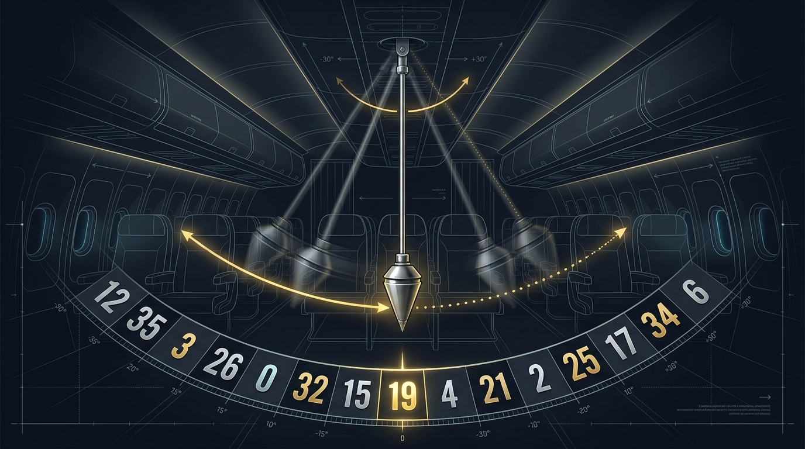
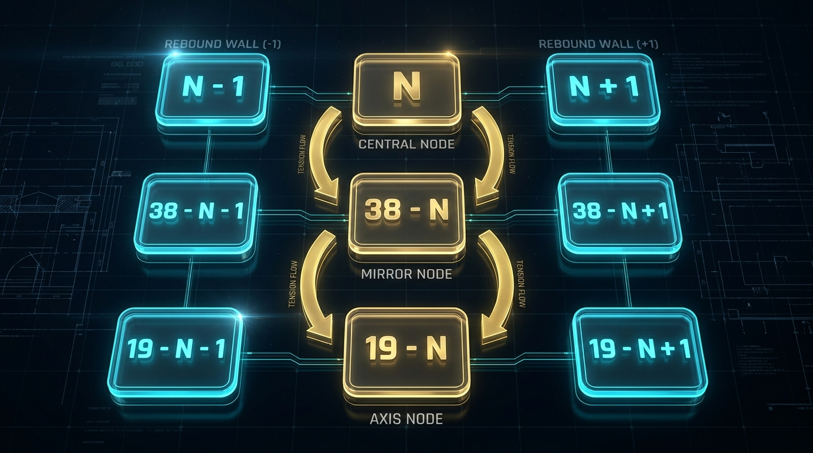
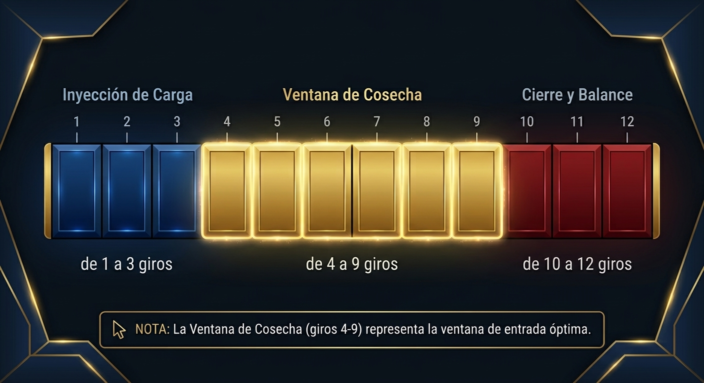
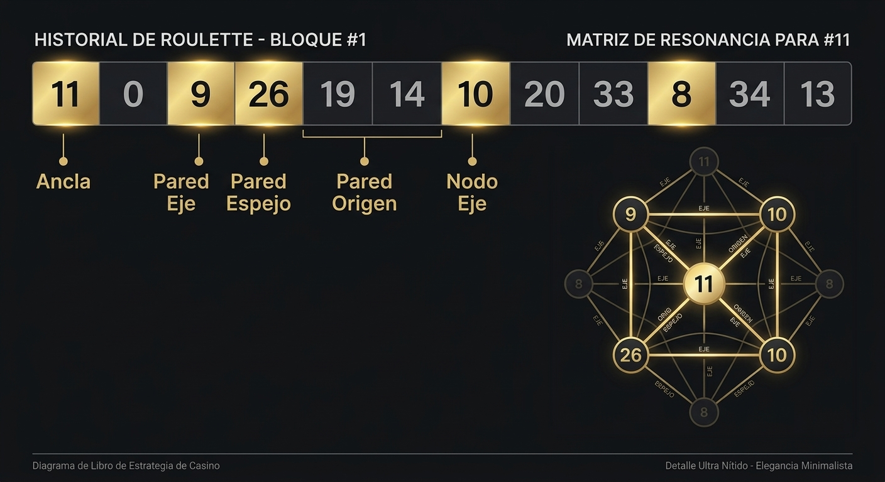
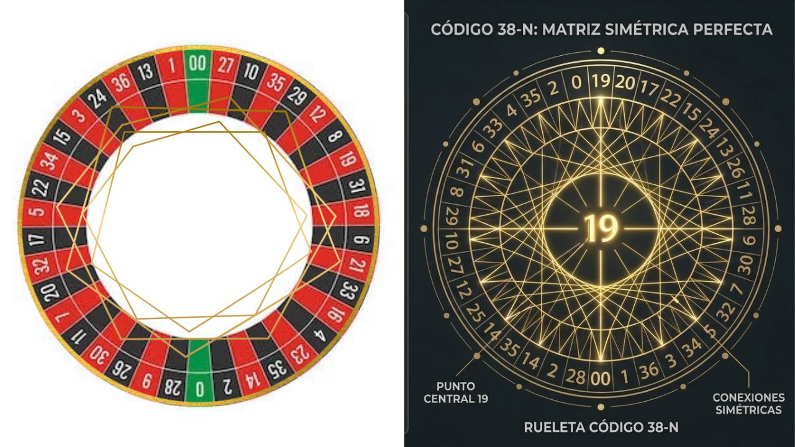
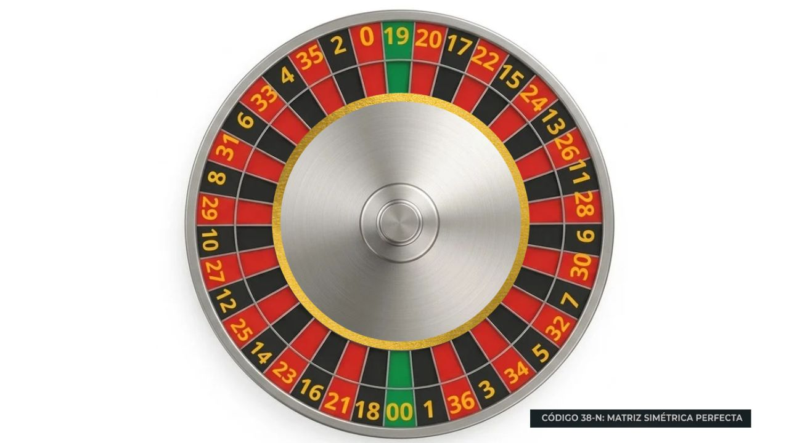

El Origen del Caos
La Física de la Matriz y el Balance en la Ruleta
Alexander J.M.
© 2026 Alexander J.M. Todos los derechos reservados.
Queda prohibida la reproducción total o parcial de esta obra, por cualquier medio o procedimiento, sin la autorización previa y por escrito del autor.
Este libro no pretende ser el santo grial de la criptografía ni una verdad dogmática e incuestionable sobre los casinos. Pretender tener la fórmula mágica e infalible para vencer al azar en cada giro sería una irresponsabilidad.
Mi verdadero propósito es brindarte una guía clara para iluminar tu camino frente a la mesa. Es entregarte las herramientas conceptuales y analíticas necesarias para que empieces a ver la ruleta de una forma completamente distinta a la que la industria nos ha acostumbrado.
Durante décadas nos han enseñado a aceptar la ruleta como un territorio dominado por la entropía, la suerte ciega y el caos absoluto. La realidad es que, cuando comprendes la estructura del juego y la lógica que rige a los generadores comerciales, ese supuesto caos empieza a ordenarse.
Aquí no encontrarás milagros; encontrarás pilares. Una metodología diseñada para organizar la información visual y numérica, permitiéndote tomar decisiones tácticas más frías, disciplinadas y fundamentadas en cada sesión de juego.
Nota importante sobre el lenguaje de esta obra: A lo largo de este libro utilizaremos términos como "compensación", "equilibrio" y "tensión" para describir patrones observados en los historiales de ruleta. Es fundamental entender que estos términos describen tendencias estadísticas y fluctuaciones naturales del sistema, no fuerzas activas que el software ejecute conscientemente. La aleatoriedad es real; lo que hacemos es leer sus fluctuaciones.
El error primordial del apostador promedio consiste en analizar cada giro de la ruleta como un suceso aislado, desconectado del pasado e indiferente al futuro. Esta visión reduccionista —promovida por la narrativa tradicional del azar plano— asume que no existe memoria en el paño y que el comportamiento de la bola es puramente errático.
Cuando un jugador se sienta frente a la pantalla de un casino online o ante una mesa física, su mente procesa lo que ve como una lluvia de números inconexos: un 28, luego un 5, después un 33, más tarde un 12. Cada resultado parece un destello independiente, una chispa lanzada por un generador caprichoso que no guarda relación con lo que vino antes ni con lo que vendrá después. Esta percepción, aunque intuitiva, es profundamente engañosa.
Cuando analizamos la ruleta comercial moderna (que integra 38 casillas: del 1 al 36, más el 0 y el 00), nos encontramos ante un sistema cerrado de distribución de masa y energía. En física y estadística, un sistema cerrado está delimitado por fronteras estrictas dentro de las cuales el número total de elementos es invariable. En nuestro caso, esa constante es absoluta: 38 casillas. No hay más. No hay menos. La rueda es un universo finito y autocontenido.
Aunque en el corto plazo la bola caiga en casillas aparentemente aleatorias, el conjunto de giros a lo largo del tiempo tiende a satisfacer de forma matemática la probabilidad teórica de retorno. La ruleta no produce caos infinito; produce un flujo dinámico de frecuencias que, en el largo plazo, converge a la distribución uniforme.

====================================================================================
SISTEMA CERRADO DE 38 ELEMENTOS (MATRIZ COMPLETA)
====================================================================================
[ 00 ] [ 0 ] [ 1 ] [ 2 ] [ 3 ] ... [ 34 ] [ 35 ] [ 36 ] (38 Casillas)
└─────────────────────────────────────────────────────────────┘
Límite Físico y Matemático de la Matriz
====================================================================================
Cada vez que la bola impacta en una casilla, se libera una carga de tensión dentro de una estructura acotada. La información no se pierde en el infinito; se redistribuye según patrones geométricos que podemos medir, calcular y anticipar.
Desde nuestros primeros años de formación, la mente humana es condicionada para procesar la realidad a través de secuencias continuas y predecibles. Aprendemos a contar en una progresión aritmética simple: 1, 2, 3, 4, 5... Esta estructura lineal genera en nuestro cerebro una sensación de confort y previsibilidad.
Sin embargo, el diseño de la rueda de la ruleta no es un capricho estético. La alternancia de colores rojo y negro, la mezcla de números altos y bajos, y la ubicación estratégica del 0 y el 00 representan un diseño pensado para fragmentar tu percepción espacial. El ojo humano intenta buscar patrones simples de un vistazo, pero la rueda responde con una masa aparentemente desordenada donde el 28 está al lado del 9, o el 2 colinda con el 0.
[ DISEÑO VISUAL CLÁSICO: CAOS APARENTE ]
Rueda tradicional: ... 28 - 9 - 26 - 30 - 11 - 7 - 20 - 32 - 17 - 5 ...
↓
El ojo del jugador se pierde en el laberinto visual.
El jugador promedio cae en la primera trampa del casino: asumir que cada giro es un evento aislado en el vacío, un destello caótico impulsado por la "suerte" o la "mala racha". Ve 38 casilleros independientes compitiendo en un desorden sin memoria.
Para tomar el control táctico de tu juego, debes despojar a la ruleta de su espectáculo visual. Tienes que dejar de verla como una rueda que gira y empezar a comprenderla como lo que verdaderamente es: una matriz cerrada, finita y contenida de 38 elementos.
Uno de los grandes mitos que ha arruinado la banca de miles de jugadores durante décadas es el concepto del "Espejo Visual o Inversión Numérica".
El jugador empírico suele creer que los números guardan relación "espejo" basándose en la simetría gráfica de sus dígitos. La trampa más común de este mito es la falsa pareja 21 - 12:
"Si acaba de salir el 21, el espejo que debe caer por compensación es el 12, porque sus dígitos están invertidos."
Esta premisa es totalmente FALSA y carece de todo sustento matemático o geométrico.
La inversión de dígitos (21→12, 31→13, 23→32) es una coincidencia de la representación decimal humana, no de la estructura física ni funcional de la rueda. El software del PRNG (Generador de Números Pseudoaleatorios) no procesa "símbolos visuales", sino posiciones de memoria y valores dentro de un rango de 38 unidades.
Intenta aplicar la lógica del mito visual a otros números:
La falacia de la inversión de dígitos no es más que un espejismo óptico sin sustento geométrico ni probabilístico.
Para la ruleta, el número 21 no es el texto "21"; es el elemento en la posición 21 de un sistema de 38 unidades.
Si aplicamos la verdadera ley del balance geométrico (38−N):
Espejo Real del 21 = 38 − 21 = 17
| Número Origen (N) | Falso Espejo Visual (Mito) | ESPEJO REAL MATEMÁTICO (38 − N) |
|---|---|---|
| 21 | 12 | 17 |
| 31 | 13 | 7 |
| 23 | 32 | 15 |
Buscar el 12 cuando sale el 21 es caer en la trampa del espejismo óptico. El verdadero polo opuesto de compensación de masa para el 21 dentro de la matriz cerrada de 38 elementos es el 17. Esta es la diferencia radical entre la superstición de casino y la ingeniería de El Código 38-N.
Durante más de un siglo, la literatura tradicional de juegos de azar, los "expertos" de casino y los manuales académicos han repetido de manera dogmática la misma afirmación:
"El 0 y el 00 son casillas especiales diseñadas para otorgarle la ventaja matemática a la casa y romper las apuestas sencillas."
Esta afirmación es matemáticamente correcta. El 0 y el 00 son, de hecho, la fuente de la ventaja de la casa en las apuestas simples. Eso es un hecho incuestionable de la teoría de probabilidad.
Lo que nuestra teoría propone no es negar esa ventaja, sino integrar el 0 y el 00 en el modelo de la matriz de 38 elementos, de modo que dejen de ser "casillas trampa" y se conviertan en nodos de compensación calculables.
El apostador común le teme al 0 y al 00 porque los ve como "monstruos verdes" que destruyen sus jugadas tradicionales. Para el jugador empírico, cuando la bola cae en el 0 o en el 00, siente que el juego se ha roto o que ha ocurrido una "anomalía".
Para El Código 38-N, el 0 y el 00 no son anomalías ni enemigos: son elementos numéricos activos, continuos y perfectamente integrados a la matriz cerrada de 38 casillas.
| Casilla Física en el Paño | Valor Matemático Real (N) | Identidad en la Matriz |
|---|---|---|
| 0 | 37 | Elemento 37 |
| 00 | 38 | Elemento 38 |
La ventaja del casino sigue existiendo matemáticamente. Lo que desaparece es la ceguera del jugador que excluye al 0 y al 00 de sus cálculos de balance. Cuando entiendes que la rueda no tiene 36 números con dos trampas, sino 38 posiciones continuas de masa, el 0 y el 00 se convierten en nodos más de captura.
Para que la fórmula 38−N funcione con precisión quirúrgica en toda la ruleta, el operador debe comprender la equivalencia matemática exacta del cero y del doble cero dentro del sistema cerrado.
A. El Caso del Cero (0→37)
En la secuencia de la matriz, el cero ocupa la posición ordinal 37.
Si queremos hallar el Espejo Real del 0 (37), aplicamos la fórmula 38−N:
Espejo del 0 (37) = 38 − 37 = 1
Conclusión matemática: El verdadero espejo de compensación del 0 es el 1.
Cuando el 0 actúa como ancla de alta presión, el sistema cerrado genera una fuerza de tracción inmediata hacia la zona del 1 y sus paredes de rebote (0, 1, 2).
B. El Caso del Doble Cero (00→38)
El doble cero representa la masa total máxima del sistema cerrado: 38.
Al aplicar la fórmula 38−N para el 00 (38):
Espejo del 00 (38) = 38 − 38 = 0 (o 38)
El 00 es el polo absoluto del sistema. Pero su verdadero valor estratégico dentro de El Código 38-N se revela al analizar el Eje Gravitacional (19).
¿De dónde nacen exactamente las constantes 38 y 19? No son números elegidos al azar ni fruto de la especulación; son las constantes absolutas de equilibrio de la matriz.
1. La Constante de Masa Total (38)
La ruleta con casillas 0 y 00 posee exactamente 38 cavidades físicamente equivalentes en probabilidad (1/38). Para hallar el punto diametralmente opuesto de un número N dentro de un ciclo completo de equilibrio, la suma del número origen (N) y su polo de compensación (E) debe igualar la masa total del sistema:
N + E = 38 → E = 38 − N
El resultado de esta resta nos entrega el Nodo Espejo Real, que es la casilla complementaria de N en la matriz.
2. La Constante del Eje Gravitacional (19)
El número 19 representa exactamente la mitad del sistema cerrado:
38 / 2 = 19
En el análisis de movimiento oscilatorio, todo cuerpo que se desplaza desde un punto N hacia su polo opuesto (38−N) tiende a cruzar por el centro de gravedad del sistema. El cálculo:
Nodo Eje = 19 − N
ubica el punto medio de la matriz. Es el nodo por donde la secuencia tiende a pasar con mayor frecuencia durante los ciclos de fluctuación.
El 19: El único número que es espejo de sí mismo
Si aplicamos el cálculo del Espejo Real al propio Pilar 19:
Espejo del 19 = 38 − 19 = 19
¡El 19 es el único número de la matriz que es espejo de sí mismo! Es el centro de masa inamovible, el eje sobre el cual oscilan los otros 37 elementos de la ruleta.
====================================================================================
DEMOSTRACIÓN DE LOS PILARES MAESTROS (38 Y 19)
====================================================================================
00 (Masa Total = 38)
│
│ (Pilar Extremo de Cierre)
▼
[ 1 ] ─────────────────────► [ 19 ] ─────────────────────► [ 37 / 0 ]
(Inicio) (EJE CENTRAL GRAVITACIONAL) (Fin)
▲
│ (Pilar Medio de Balance)
│
19 (38 / 2 = 19)
====================================================================================
Aplicación de los Pilares al Cero (0→37)
Cuando el número ancla es el 0 (37), la fórmula despliega la arquitectura completa de sus pilares:
Matriz de Resonancia Resultante para el Cero (0):
====================================================================================
MATRIZ DE RESONANCIA CALCULADA PARA EL CERO (0 / 37)
====================================================================================
Nodo Origen (0 / 37) ──► 36 ─── [ 0 ] ─── 00
Nodo Espejo (1) ──► 0 ─── [ 1 ] ─── 2
Nodo Eje (20) ──► 19 ─── [ 20 ] ─── 21
====================================================================================
Imagina un estanque de agua en perfecta calma dentro de una piscina con paredes sólidas. Si dejas caer una piedra en el centro, el impacto no se limita al punto donde la piedra tocó la superficie.
Inmediatamente se generan ondas que viajan hacia las paredes del estanque, chocan contra los límites y rebotan hacia el centro buscando restaurar el nivel inicial.
[ IMPACTO DEL NÚMERO (Ej: #23) ]
│
┌──────────────┴──────────────┐
▼ ▼
Onda a la Izquierda Onda a la Derecha
(Hacia M_n / Espejo) (Hacia M_x / Retorno)
│ │
└──────────────┬──────────────┘
▼
[ RECONSTITUCIÓN EN EL CENTRO M_d (#19) ]
En la ruleta ocurre un fenómeno análogo:
El error del apostador impulsivo es quedarse paralizado mirando la piedra (el número que acaba de salir) y apostar a ciegas por impulso emocional. El jugador analítico que utiliza nuestra guía ignora la piedra y fija su mirada en las zonas de influencia donde la fluctuación tiende a manifestarse, anticipando los puntos de captura.
Regla 1: Olvídate del desorden de colores y la rueda tradicional. Para ti, la ruleta es un tablero de 38 posiciones fijas.
Regla 2: Ningún número sale "porque sí". Cada resultado genera una fluctuación de frecuencia en la matriz.
Regla 3: El espejo visual (21-12) no existe. El verdadero espejo se calcula con la fórmula 38−N.
Regla 4: El 0 y el 00 son la ventaja matemática del casino, pero nuestra teoría los integra en el modelo. El 0 vale 37 y su espejo es el 1. El 00 vale 38 y su espejo es el 19.
Regla 5: El 19 es el eje gravitacional del sistema, el único número que es espejo de sí mismo.
Regla 6: Tu objetivo no es adivinar el futuro, sino colocar tus fichas en las zonas de influencia donde las fluctuaciones tienden a manifestarse.
Para comprender por qué los números calculados no caen siempre de forma rígida en un solo punto estático, debemos recurrir a la física de la inercia y la dispersión de fluidos.
Imagine un péndulo pesado suspendido del techo de un avión comercial que se desplaza a velocidad constante. Mientras el avión vuele en línea recta y sin turbulencias, el péndulo cuelga perfectamente vertical en su punto de reposo.
Sin embargo, cuando el avión realiza una maniobra de viraje o experimenta una fuerza externa (el "impacto" de un número ancla N en la ruleta), el péndulo se desplaza bruscamente hacia un extremo. Al regresar por fuerza de gravedad, el péndulo no se detiene en seco al tocar el punto central; su inercia lo lleva a oscilar hacia los lados y golpear las paredes laterales del avión.

====================================================================================
EL PÉNDULO DEL AVIÓN Y LAS PAREDES DE REBOTE
====================================================================================
Punto de Suspensión
│
│
Pared Izquierda ───► ( -1 ) [ NODO ] ( +1 ) ◄─── Pared Derecha
\ │ /
\ │ /
\ │ /
\ │ /
└─── O ───┘
Onda de Impacto
====================================================================================
En la ruleta ocurre un fenómeno análogo en términos estadísticos:
Para entender cómo reacciona la matriz cuando un sector se satura, imagina por un momento que eres el piloto al mando de un avión comercial en pleno vuelo.
Para mantener la aeronave nivelada y en ruta, realizas ajustes suaves en el timón. Si necesitas hacer un viraje controlado a la derecha, giras el volante de forma progresiva. El avión se inclina suavemente, realiza el giro y, para volver a volar recto, regresas el timón con delicadeza a su punto medio.
[ EL AVIÓN EN VUELO NIVELADO ]
│
┌────────────────────┴────────────────────┐
▼ ▼
[ Giro Brusco a la Derecha ] [ Fuerza de Corrección ]
Satural la zona alta (34, 35, 36) El sistema busca el centro
│ │
└────────────────────┬────────────────────┘
▼
[ ZONA DE ESTABILIZACIÓN CENTRAL ]
Eje Central: 17, 18, 19, 20, 21
Ahora bien, ¿qué sucede si estás en la cabina y de repente tiras del timón de forma violenta y prolongada hacia la derecha?
La aeronave perderá la sustentación, se volteará sobre su propio eje y entrará en una barrena peligrosa. El avión simplemente no puede sostener una inclinación extrema de forma indefinida.
En la ruleta ocurre un fenómeno estadístico análogo:
Cuando veas caer dos o tres números seguidos en la zona de máxima tensión (34, 35, 36), no te dejes llevar por la euforia ni sigas persiguiendo los números altos a ciegas.
Reconoce la señal del piloto: la distribución se ha inclinado demasiado hacia un extremo. Estadísticamente, la probabilidad de que aparezcan números en la zona de estabilización central (17 al 21) aumenta. Posiciona tus fichas allí.
Entendiendo la dinámica del péndulo, el operador de El Código 38-N no coloca una sola ficha rígida en el número calculado. Construye una zona de captura quirúrgica incorporando las paredes de rebote (+1 e −1) para cada uno de los 3 nodos principales.
Dado un número ancla N, la Matriz de Resonancia Completa de 9 elementos se desglosa así:
Bloque del Nodo Origen (N):
Bloque del Nodo Espejo Real (38−N):
Bloque del Nodo Eje Gravitacional (19−N):

====================================================================================
ESTRUCTURA DE LA MATRIZ DE RESONANCIA (9 NODOS)
====================================================================================
Nodo Origen (N) ──► (N - 1) ── [ N ] ── (N + 1)
Nodo Espejo (38 - N) ──► ((38-N) - 1) ── [38 - N] ── ((38-N) + 1)
Nodo Eje (19 - N) ──► ((19-N) - 1) ── [19 - N] ── ((19-N) + 1)
====================================================================================
Para integrar el Capítulo 1 y el Capítulo 2 en una demostración matemática real:
Supongamos que en la mesa identificamos al #21 como el número ancla de alta presión.
Paso 1: Descartar el Mito Visual
Paso 2: Calcular el Doble Filtro Real
Paso 3: Desplegar las Paredes de Rebote (±1)
Matriz Resultante de Captura:
====================================================================================
MATRIZ DE RESONANCIA CALCULADA PARA EL #21
====================================================================================
Nodo Origen (#21) ──► 20 ─── [ 21 ] ─── 22
Nodo Espejo (#17) ──► 16 ─── [ 17 ] ─── 18
Nodo Eje (#36) ──► 35 ─── [ 36 ] ─── 37 / 0
====================================================================================
Donde el apostador tradicional estaría buscando erróneamente el 12, el operador del Péndulo despliega su red de captura sobre la verdadera matriz de masa (16, 17, 18, 20, 21, 22, 35, 36, 37), capturando el impacto con precisión matemática.
Apliquemos ahora la misma lógica a un número que aparecerá en nuestro caso de estudio del Capítulo 7. Tomemos el #11 como número ancla.
Paso 1: Calcular el Doble Filtro Real
Paso 2: Desplegar las Paredes de Rebote (±1)
Matriz Resultante de Captura:
====================================================================================
MATRIZ DE RESONANCIA CALCULADA PARA EL #11
====================================================================================
Nodo Origen (#11) ──► 10 ─── [ 11 ] ─── 12
Nodo Espejo (#27) ──► 26 ─── [ 27 ] ─── 28
Nodo Eje (#8) ──► 07 ─── [ 08 ] ─── 09
====================================================================================
Esta matriz de 9 casillas es tu red de captura. Cuando el #11 se convierte en ancla, no apuestas solo al 11; apuestas a que la fluctuación golpeará en alguno de estos 9 nodos dentro de la ventana activa.
Para consolidar todo lo aprendido, aquí tienes la estructura completa de la matriz con sus tres pilares fundamentales:
====================================================================================
LOS TRES PILARES EN LA MATRIZ
====================================================================================
[ M_n: 1 al 18 ] ──► [ M_d: #19 ] ◄── [ M_x: 20 al 36 ]
(Zona de Mínimos) (Eje de Gravedad) (Zona de Máximos)
* Casilla Especial 37: Número 0 (Cero simple)
* Casilla Especial 38: Número 00 (Doble cero)
====================================================================================
M_n (Mínimo): Zona de Mínimos (1 al 18)
Representa el límite inferior de la matriz. Comprende el rango de los números más bajos y las casillas de origen. Cuando la frecuencia se desplaza hacia esta zona, acumula tensión estadística que eventualmente tiende a equilibrarse con el resto de la matriz.
M_d (Middle / Punto Medio): Eje de Gravedad (#19)
Es el centro exacto de gravedad de la rueda. Al dividir el rango total entre dos (38/2), obtenemos el número 19. El 19 no es simplemente un número más en el paño; es el punto de reposo, la bisagra alrededor de la cual gira toda la estructura.
M_x (Máximo): Zona de Máximos (20 al 36)
Representa el límite superior de la matriz. Comprende el rango de los números más altos. Cuando la frecuencia se concentra en esta zona de forma consecutiva, la distribución se sobre-representa y estadísticamente tiende a corregirse.
Entender el papel del 19 (M_d) es lo que separa a los novatos de los jugadores estructurados.
Cuando la rueda produce resultados en la zona de máximos (M_x), la frecuencia del sistema se desplaza hacia un extremo. La tendencia natural de la distribución hace que el punto central M_d (19) actúe como un imán o filtro obligatorio.
Si observas detenidamente un historial de giros en cualquier casino, notarás que antes o inmediatamente después de que la mesa cambie de una racha de números altos a una de números bajos, el 19 (o sus números vecinos inmediatos en la matriz) tiende a manifestarse como la bisagra que autoriza el cambio de dirección.
Regla 1: La ruleta oscila como un péndulo. No se queda indefinidamente en un extremo.
Regla 2: Cuando la distribución se inclina demasiado hacia un extremo (como un avión en viraje brusco), tiende a corregirse hacia el centro (17-21).
Regla 3: Los números no caen solos. Cada nodo calculado tiene paredes de rebote (±1) que amplían la zona de captura.
Regla 4: Tu matriz de resonancia tiene 9 casillas: los 3 nodos centrales (N, 38−N, 19−N) más sus 6 paredes de rebote.
Regla 5: El 19 (M_d) es la bisagra de la mesa. Cuando aparece, el sistema está cruzando el eje de gravedad.
Regla 6: Identifica en qué extremo de la matriz (M_n o M_x) se encuentra concentrada la frecuencia actual. Nunca apuestes a favor de un extremo que ya ha alcanzado su punto de saturación.
En el Capítulo 1 demolimos la falacia del "espejo visual" usando el ejemplo más común de todos: el falso par 21-12. Sin embargo, este mito no es el único que ha contaminado la mente de los apostadores durante generaciones. Existe toda una familia de creencias erróneas que han sido repetidas de boca en boca en los pasillos de los casinos, en foros de internet y en decenas de libros de "sistemas milagrosos".
Todas ellas comparten un mismo origen: la confusión entre la representación gráfica de un número y su verdadera posición geométrica dentro de la matriz cerrada de 38 elementos.
Veamos los casos más comunes de esta falacia:
====================================================================================
LA FAMILIA COMPLETA DE FALSOS ESPEJOS VISUALES
====================================================================================
Número Real │ Falso Espejo "Visual" │ Por qué colapsa la lógica
──────────────┼─────────────────────────┼────────────────────────────────────────
12 │ 21 │ El 21 no es el complemento de masa del 12
13 │ 31 │ El 31 no está en la posición opuesta al 13
14 │ 41 │ El 41 no existe en la matriz de 38
23 │ 32 │ El 32 no equilibra al 23 (el 15 sí lo hace)
24 │ 42 │ El 42 no existe en la matriz de 38
35 │ 53 │ El 53 no existe en la matriz de 38
8 │ 80 │ El 80 no existe en la matriz de 38
0 │ 0 │ El cero no es espejo de sí mismo (es el 1)
00 │ 00 │ El 00 no es espejo de sí mismo (es el 19)
====================================================================================
Observe la trampa con detenimiento. El mito de la inversión de dígitos solo "funciona" en un rango muy limitado de números (del 12 al 21, del 13 al 31, del 23 al 32) y colapsa estrepitosamente en cuanto intentas aplicarlo a cualquier número que contenga un dígito mayor a 3 en las unidades, o a los números de una sola cifra, o a las casillas especiales del 0 y el 00.
¿Por qué ocurre esto? Porque el mito no nace de la geometría de la rueda, sino de un sesgo cognitivo humano: nuestra mente busca simetrías visuales donde no las hay. Vemos el 12 y el 21, y nuestro cerebro automáticamente los empareja porque comparten los mismos dígitos en orden invertido. Es una ilusión óptica, no una ley matemática.
El daño que este mito ha causado es inmenso. Miles de apostadores han colocado sus fichas en el número "espejo visual" esperando una compensación que nunca ocurre por esa razón. Cuando el 21 sale en la mesa y el jugador apuesta al 12 creyendo que es su espejo, está operando bajo una premisa falsa. El verdadero espejo del 21 es el 17, y el 12 solo aparecerá (si aparece) por razones completamente distintas a las que el mito le atribuye.
La matriz de 38 elementos no sabe nada de dígitos invertidos. Solo conoce de posiciones, frecuencias y balances geométricos.
Una vez demolido el mito visual, estamos listos para establecer la verdadera ley que gobierna el equilibrio de la matriz. Esta ley no es una invención arbitraria; es una deducción matemática directa del principio de conservación de masa en un sistema cerrado de 38 elementos.
En un sistema cerrado, la suma de cualquier elemento y su complemento de equilibrio debe igualar la constante total del sistema. Si llamamos N al número de origen y E al número espejo, entonces:
N + E = 38
Despejando E:
E = 38 − N
Esta es la Ley del Espejo Real. Es una fórmula universal, limpia y matemáticamente irrefutable. No admite excepciones, no depende de la representación gráfica de los números y funciona para todas las 38 casillas de la matriz.
| Número Base (N) | Cálculo (38 − N) | Espejo Real | Verificación Cruzada |
|---|---|---|---|
| 1 | 38 − 1 | 37 | (0/37) ✓ |
| 2 | 38 − 2 | 36 | 2 + 36 = 38 ✓ |
| 5 | 38 − 5 | 33 | 5 + 33 = 38 ✓ |
| 10 | 38 − 10 | 28 | 10 + 28 = 38 ✓ |
| 15 | 38 − 15 | 23 | 15 + 23 = 38 ✓ |
| 17 | 38 − 17 | 21 | 17 + 21 = 38 ✓ |
| 19 | 38 − 19 | 19 | 19 + 19 = 38 ✓ |
| 21 | 38 − 21 | 17 | 21 + 17 = 38 ✓ |
| 23 | 38 − 23 | 15 | 23 + 15 = 38 ✓ |
| 28 | 38 − 28 | 10 | 28 + 10 = 38 ✓ |
| 33 | 38 − 33 | 5 | 33 + 5 = 38 ✓ |
| 35 | 38 − 35 | 3 | 35 + 3 = 38 ✓ |
| 36 | 38 − 36 | 2 | 36 + 2 = 38 ✓ |
1. El 19 es el punto fijo del sistema.
Como vimos en el Capítulo 1, el 19 es el único número que es espejo de sí mismo. Esto lo convierte en el eje gravitacional invariable de la matriz.
2. Los pares de espejos son simétricos.
Si el espejo del 21 es el 17, entonces el espejo del 17 es el 21. La relación es bidireccional.
3. Los espejos son diametralmente opuestos en la rueda física.
Si tomas una rueda de ruleta real y observas la posición del 21 y del 17, descubrirás que están en lados prácticamente opuestos de la circunferencia.
4. La fórmula funciona en ambas direcciones.
No importa si el número que sale primero es el "mayor" o el "menor" del par.
Llegamos al punto más delicado y, a la vez, más brillante de nuestra teoría. El tratamiento del cero.
Como establecimos en el Capítulo 1, la literatura tradicional de casino nos ha enseñado a temer al 0 y al 00 como "casillas trampa" que rompen la lógica del juego. Pero en El Código 38-N, el cero no solo no rompe la lógica: es una pieza fundamental del sistema, y su integración matemática es lo que completa la simetría de la matriz.
Para que la fórmula 38−N funcione sobre la totalidad de la matriz, debemos asignar al cero su verdadera posición dentro del rango de 38 casillas. Esa posición es la 37.
¿Por qué 37? Porque en la secuencia completa de la matriz, los números se ordenan así:
Entonces, cuando aplicamos la Ley del Espejo Real al cero:
Espejo(0) = 38 − 37 = 1
El espejo del cero es el número 1.
Esta relación no es una curiosidad matemática. Es una herramienta táctica de primer orden. Cuando el cero aparece como ancla de alta presión en la mesa, el sistema cerrado genera una tracción estadística inmediata hacia el 1 y su zona de rebote:
====================================================================================
MATRIZ DE RESONANCIA DEL CERO (0 / 37)
====================================================================================
Nodo Origen (0 / 37) ──► 36 ─── [ 0 ] ─── 00
Nodo Espejo (1) ──► 0 ─── [ 1 ] ─── 2
Nodo Eje (20) ──► 19 ─── [ 20 ] ─── 21
====================================================================================
Observe que el 0 y el 1 son vecinos casi adyacentes en la matriz. Esta cercanía es lo que hace que la compensación del cero sea tan inmediata: cuando el 0 sale, el sistema no tiene que viajar lejos para encontrar su equilibrio; el 1 está justo en la casilla contigua.
El doble cero es la casilla más incomprendida de toda la ruleta. Durante décadas, ha sido tratado como un "monstruo" que destruye apuestas, como una anomalía que rompe todas las secuencias, como un elemento caótico que solo beneficia a la casa.
Nada más lejos de la verdad.
En nuestra matriz, el 00 ocupa la posición ordinal 38. Es el límite superior absoluto del sistema cerrado. Es, literalmente, la masa total de la matriz.
Cuando aplicamos la Ley del Espejo Real al 00:
Espejo(00) = 38 − 38 = 0
Matemáticamente, el espejo del 00 sería el 0 (o el propio 38, según cómo se interprete el resultado). Pero esto no nos da una respuesta útil para el juego.
Aquí es donde entra una de las reglas especiales de El Código 38-N:
Cuando el espejo calculado de un número es el propio 00 (38), su verdadero espejo de compensación es el Punto Medio: el 19 (M_d).
Esta regla especial tiene una justificación geométrica profunda. El 00 (38) es el límite superior de la matriz. El 19 es el punto medio. En un sistema cerrado, cuando el elemento más extremo se activa, la tendencia estadística apunta hacia el centro de gravedad del sistema.
Es la misma lógica del péndulo del avión: cuando el timón se inclina al máximo en una dirección, la corrección más efectiva no es inclinarlo al máximo en la dirección opuesta, sino volver al punto medio de equilibrio.
====================================================================================
MATRIZ DE RESONANCIA DEL DOBLE CERO (00 / 38)
====================================================================================
Nodo Origen (00 / 38) ──► 0 ─── [ 00 ] ─── (retorno)
Nodo Espejo (19) ──► 18 ─── [ 19 ] ─── 20
Nodo Eje (19) ──► 18 ─── [ 19 ] ─── 20
====================================================================================
Cuando el 00 sale, su matriz de resonancia se concentra en el eje central 19 y su zona de rebote inmediata (18-19-20). Esta es una de las jugadas más limpias y predecibles del sistema.
Llegados a este punto, es imprescindible hacer una aclaración que separa a El Código 38-N de cualquier otra teoría de espejos numéricos. Esta aclaración es fundamental para que el lector no caiga en una contradicción matemática al aplicar la fórmula de forma mecánica.
Hemos establecido que todo número N de la matriz tiene un espejo calculable mediante la fórmula:
Espejo(N) = 38 − N
Sin embargo, existe una excepción estructural que no es un error ni una violación de la ley, sino la consecuencia lógica de la propia arquitectura del sistema cerrado:
El 38 (00) y el 19 no se rigen por la Ley del Espejo. Ellos SON los puntos de gravitación de la matriz.
La Ley del Espejo (38−N) es una fórmula que calcula la posición de compensación de un número dentro de la matriz. Funciona para cualquier elemento que no sea, él mismo, un pilar estructural del sistema.
Pero el 38 y el 19 no son elementos cualesquiera de la matriz. Son los dos puntos de gravitación sobre los cuales se construye toda la arquitectura del sistema cerrado:
Estos dos números no nacen de un cálculo de espejo. Nacen de una división estructural:
38 / 2 = 19
El 19 no es el "espejo" del 38 en el sentido ordinario. El 19 es la mitad matemática del 38. Son dos caras de una misma realidad: el sistema cerrado de 38 elementos y su punto medio de gravedad de 19 elementos.
====================================================================================
DIFERENCIA ENTRE RELACIÓN DE ESPEJO Y RELACIÓN DE GRAVITACIÓN
====================================================================================
Tipo de Relación │ Fórmula Aplicada │ Naturaleza Matemática
─────────────────────┼─────────────────────┼────────────────────────────────────────
RELACIÓN DE ESPEJO │ Espejo(N) = 38 - N │ Cálculo de compensación entre
(Números comunes) │ │ dos elementos cualesquiera.
│ │ Ejemplo: Espejo(21) = 17
─────────────────────┼─────────────────────┼────────────────────────────────────────
RELACIÓN DE │ 38 / 2 = 19 │ División estructural del sistema.
GRAVITACIÓN │ │ No es un cálculo de compensación,
(Pilares 38 y 19) │ │ es la definición misma de los
│ │ puntos de equilibrio.
====================================================================================
1. El 19 no tiene "espejo calculado", porque es el punto fijo.
Si aplicáramos mecánicamente la fórmula al 19:
38 − 19 = 19
El resultado es el propio 19. Esto confirma matemáticamente que el 19 es el punto fijo del sistema.
2. El 38 (00) no tiene un "espejo calculado" en el sentido ordinario.
Si aplicáramos mecánicamente la fórmula al 38:
38 − 38 = 0
El resultado es el 0 (o el propio 38), lo que no nos da información táctica útil. Por eso, establecemos la regla especial:
Cuando el 00 (38) se activa como ancla, su punto de compensación de equilibrio es el 19 (M_d), porque el 19 es la mitad estructural del sistema.
====================================================================================
REGLA ESPECIAL DE LOS PILARES ESTRUCTURALES
====================================================================================
Pilar │ Posición │ Naturaleza │ Regla Táctica
───────────┼────────────┼──────────────────────┼──────────────────────────────────
38 │ (00) │ Masa Total │ Su compensación es el 19 (M_d)
│ │ del Sistema │ por división estructural (38/2).
───────────┼────────────┼──────────────────────┼──────────────────────────────────
19 │ (M_d) │ Eje de Gravedad │ Es punto fijo. No se le aplica
│ │ Central │ la Ley del Espejo porque él ES
│ │ │ el espejo de sí mismo.
====================================================================================
Hemos llegado al corazón matemático de El Código 38-N. El número 19.
Apliquemos la Ley del Espejo Real al 19:
Espejo(19) = 38 − 19 = 19
El resultado es el propio 19. Esto significa que el 19 es el único punto fijo del sistema. Es, por definición matemática, el centro de gravedad inamovible de la matriz.
1. Como Punto Medio Geométrico (M_d):
El 19 es la mitad exacta de la matriz (38/2 = 19). Es el eje alrededor del cual oscilan todos los demás números.
2. Como Espejo del Doble Cero:
Cuando el 00 (38) se activa, el 19 se convierte en su complemento de equilibrio.
En términos tácticos, el 19 es tu brújula de confirmación. Cuando el 19 aparece en la mesa (o cuando aparece alguno de sus vecinos inmediatos: 18, 20), el sistema está enviando una señal clara de que está cruzando el eje de gravedad.
====================================================================================
EL 19 COMO BISAGRA DEL SISTEMA
====================================================================================
[ M_n: 1 al 18 ] [ M_d: 19 ] [ M_x: 20 al 36 ]
(Zona de Mínimos) (Eje Central) (Zona de Máximos)
│ │ │
│ │ │
▼ ▼ ▼
La frecuencia ────► Cruza el 19 ────► Se desplaza al extremo
se inclina (bisagra) opuesto
====================================================================================
Para que tengas una referencia completa y puedas consultarla en cualquier momento durante tus sesiones de juego, aquí tienes la tabla completa de todos los espejos reales de la matriz de 38 elementos:
| N | Espejo | N | Espejo | N | Espejo | N | Espejo | N | Espejo |
|---|---|---|---|---|---|---|---|---|---|
| 1 | 37 | 9 | 29 | 17 | 21 | 25 | 13 | 33 | 5 |
| 2 | 36 | 10 | 28 | 18 | 20 | 26 | 12 | 34 | 4 |
| 3 | 35 | 11 | 27 | 19 | 19 | 27 | 11 | 35 | 3 |
| 4 | 34 | 12 | 26 | 20 | 18 | 28 | 10 | 36 | 2 |
| 5 | 33 | 13 | 25 | 21 | 17 | 29 | 9 | 37 | 1 |
| 6 | 32 | 14 | 24 | 22 | 16 | 30 | 8 | 38 | 19 |
| 7 | 31 | 15 | 23 | 23 | 15 | 31 | 7 | ||
| 8 | 30 | 16 | 22 | 24 | 14 | 32 | 6 |
Esta tabla es tu herramienta de consulta rápida. En una sesión real, no necesitas calcular la resta cada vez; con práctica, memorizarás los pares más comunes y podrás identificar el espejo de cualquier número en una fracción de segundo.
Supongamos que estás observando una mesa de ruleta y notas que el número #28 ha aparecido dos veces en los últimos 20 giros. Este número se convierte en tu ancla caliente.
Paso 1: Calcular el espejo real del #28
Espejo(28) = 38 − 28 = 10
Paso 2: Calcular el nodo eje del #28
Nodo Eje(28) = 19 − 28 = −9 → (−9 + 38) = 29
Paso 3: Construir la matriz de resonancia
====================================================================================
MATRIZ DE RESONANCIA CALCULADA PARA EL #28
====================================================================================
Nodo Origen (#28) ──► 27 ─── [ 28 ] ─── 29
Nodo Espejo (#10) ──► 9 ─── [ 10 ] ─── 11
Nodo Eje (#29) ──► 28 ─── [ 29 ] ─── 30
====================================================================================
Paso 4: Ejecución en la mesa
Tu matriz de captura para el #28 incluye las siguientes casillas:
Nodos centrales: 28, 10, 29
Paredes de rebote: 27, 29, 9, 11, 28, 30
Casillas únicas de captura: 9, 10, 11, 27, 28, 29, 30
Ahora, en lugar de apostar a un solo número, tienes una red de captura de 7 casillas que cubre toda la zona de influencia de tu ancla.
Regla 1: El mito del espejo visual (21-12) es falso. El verdadero espejo de cualquier número se calcula con la fórmula 38−N.
Regla 2: El 0 ocupa la posición 37 y su espejo es el 1. Cuando el 0 sale como ancla, la matriz de resonancia se concentra en la zona 0-1-2 y 19-20-21.
Regla 3: El 00 ocupa la posición 38. Su espejo especial es el 19 (M_d). Cuando el 00 sale, la matriz de resonancia se concentra en el eje central 18-19-20.
Regla 4: El 19 es el único punto fijo de la matriz. Es el eje gravitacional y la bisagra del sistema. No se le aplica la Ley del Espejo porque él ES el espejo de sí mismo.
Regla 5: El 38 (00) y el 19 son los pilares estructurales del sistema. Su relación es de gravitación (38/2 = 19), no de espejo.
Regla 6: Usa la tabla completa de espejos como referencia rápida durante tus sesiones. Con práctica, memorizarás los pares más comunes.
Regla 7: Cuando construyas tu matriz de resonancia, no apuestes a un solo número. Apuesta a la red completa de 7-9 casillas que cubren la zona de influencia de tu ancla.
Para el jugador común, ver aparecer los números en la pantalla del casino es como observar letras aleatorias cayendo en una hoja en blanco. Ve salir un 23, luego un 15, después un 4, y su mente lo interpreta como cuatro eventos inconexos lanzados por la suerte. No hay hilo conductor, no hay narrativa, no hay estructura.
El estratega de la matriz sabe que los números no viajan solos. En una matriz cerrada de 38 casilleros, los resultados están interconectados por lazos de tensión geométrica. Cuando un número se activa como ancla, no es un evento aislado: es el detonante de una secuencia que tiende a desplegarse a lo largo de los siguientes giros.
Una secuencia o ciclo no es más que el recorrido natural que sigue la fluctuación de frecuencia cuando pasa de un extremo de tensión (M_x), atraviesa el centro de gravedad (M_d = 19) o su espejo (38−N), y se deposita en el extremo opuesto (M_n).
[ NÚMERO DISPARADOR: #23 ] ──(Ley del Espejo: 38 - 23)──► [ ESPEJO DIRECTO: #15 ]
│
(Ajuste de Eje Central M_d)
▼
[ RETORNO AL TECHO: #34 ] ◄──(Lanza Tensión al Origen)─── [ COMPENSACIÓN EN ORIGEN: #4 ]
Cuando aprendes a leer las secuencias en lugar de mirar números aislados, la pantalla de la ruleta deja de ser un laberinto caótico y se convierte en un mapa de ruta navegable. Cada número que aparece no es un evento suelto: es una pieza de un rompecabezas que se está armando frente a tus ojos.
En el Capítulo 3 establecimos la Ley del Espejo Real (38−N) como el primer filtro de la matriz. Pero el espejo por sí solo no nos da la secuencia completa. Nos da un polo de compensación, sí, pero no nos dice cómo viaja la fluctuación desde el número origen hasta ese polo, ni por dónde pasa en el camino.
Para desplegar la secuencia completa, necesitamos aplicar un segundo filtro: la distancia al eje de gravedad (19−N). Es la combinación de ambos filtros la que nos entrega el mapa de ruta completo.
Filtro 1 — La Ley del Espejo Real (38−N):
Nodo Espejo = 38 − N
Filtro 2 — La Distancia al Eje de Gravedad (19−N):
Nodo Eje = 19 − N
La combinación de ambos filtros nos entrega la Cadena Base de 3 Nodos:
N → (38 − N) → (19 − N)
¿Por qué funcionan los dos filtros simultáneamente? Porque la matriz cerrada tiene dos puntos de referencia obligatorios:
====================================================================================
ALGORITMO DE SECUENCIA CONTINUA (MÉTODO 38/19)
====================================================================================
Paso 1: Espejo Base ──► 38 - N = E_1 (Primer Espejo)
Paso 2: Distancia al Centro ──► 19 - N = D_1 (Nodo de Gravedad)
La Cadena Base queda definida: N ──► (38 - N) ──► (19 - N)
====================================================================================
Pongamos a prueba la matemática exacta con un número real en la mesa. Aparece en el paño el número 22.
Paso 1: Cálculo del Espejo Base (38−N)
38 − 22 = 16
Primer espejo directo: El 16.
Paso 2: Cálculo del Nodo Eje (19−N)
19 − 22 = −3
Ajuste en matriz circular: Los resultados negativos se ajustan sumando 38:
−3 + 38 = 35
Nodo Eje: El 35.
Paso 3: La Cadena Base
22 → 16 → 35
Paso 4: Despliegue completo de la secuencia
Aplicamos nuevamente los filtros a los nodos derivados:
Desde el espejo 16:
19 − 16 = 3
Desde el nodo 3:
38 − 3 = 35
Desde el nodo 35:
19 − 35 = −16 → (−16 + 38) = 22
Paso 5: El cierre del ciclo
El ciclo se cierra de manera perfecta:
22 → 16 → 3 → 35 → 16 → 22
[ NÚMERO BASE: #22 ]
│
(38 - 22 = 16)
▼
[ PRIMER ESPEJO: #16 ]
│
(19 - 16 = 3)
▼
[ NODO DE GRAVEDAD: #3 ]
│
(38 - 3 = 35)
▼
[ REBOTE AL TECHO: #35 ]
│
(19 - 35 = -16 → 22)
▼
[ RETORNO Y CIERRE: #16 ──► #22 ]
Analiza lo que acaba de ocurrir en este cálculo:
No hay espacio para la adivinación. Es un circuito cerrado donde cada número es el engranaje que activa al siguiente.
Paso 1: El Disparo y la Respuesta del Espejo (23→15)
Espejo(23) = 38 − 23 = 15
Paso 2: El Desplazamiento de Tensión hacia el Origen (15→4)
19 − 15 = 4
Paso 3: El Rebote hacia el Techo (4→34)
38 − 4 = 34
Paso 4: El Cierre del Ciclo (34→23)
19 − 34 = −15 → (−15 + 38) = 23
====================================================================================
EL CICLO CERRADO DE LA SECUENCIA DEL 23
====================================================================================
Fase del Ciclo Número Activo Ubicación en la Matriz
──────────────────────────────────────────────────────────────────────────────────────
1. Disparo Inicial 23 Zona Alta (M_x)
2. Reflejo de Tensión 15 Espejo Real (38 - 23)
3. Anclaje de Gravedad 4 Zona Baja de Mínimos (M_n)
4. Rebote Compensatorio 34 Techo de Máximos (M_x)
5. Cierre del Ciclo 23 Retorno al Origen
====================================================================================
Es vital que el jugador entienda una regla de oro antes de arriesgar una sola ficha:
La ruleta no está obligada a tirar el número exacto del espejo. Tiende a liberar la fluctuación en su zona de influencia.
Apostar en la ruleta esperando que el sistema entregue de forma rígida y perfecta la secuencia 22→16→3→35 es un error de novato. El algoritmo o la masa de la rueda no funciona como un tren sobre rieles infalibles; funciona como una fuerza estadística de presión.
Cuando el sistema calcula la deuda de tensión del 16, la carga no cae necesariamente en la casilla 16 limpia: tiende a caer en el colchón de compensación 17−[16]−18.
====================================================================================
LOS BLOQUES DE COMPENSACIÓN POR SECTOR
====================================================================================
Nodo Teórico Calculado Eje Central Zona Real de Cobertura (Vecinos)
──────────────────────────────────────────────────────────────────────────────────────
Espejo: 16 ──► 16 ──► 17 - [16] - 18
Nodo: 3 ──► 3 ──► 2 - [ 3] - 4
Techo: 35 ──► 35 ──► 34 - [35] - 36
Origen: 22 ──► 22 ──► 21 - [22] - 23
====================================================================================
Si el sistema responde lanzando un 34 o un 18, el jugador iluso piensa que "perdió por un número". El estratega del Péndulo sabe que el análisis fue correcto: el sistema liberó la fluctuación en la zona proyectada y la trampa fue capturada con éxito dentro del bloque.
[ COBERTURA MÚLTIPLE DEL JUGADOR CALCULADOR ]
Nodo Teórico Rango de Captura (Vecinos de Matriz)
──────────── ───────────────────────────────────
Espejo 16 ──► [ 17 ] ─── [ 16 ] ─── [ 18 ]
Nodo 3 ──► [ 2 ] ─── [ 3 ] ─── [ 4 ]
Techo 35 ──► [ 34 ] ─── [ 35 ] ─── [ 36 ]
Origen 22 ──► [ 21 ] ─── [ 22 ] ─── [ 23 ]
"Ningún perfil es superior al otro; son herramientas para momentos distintos de la sesión."
Paso 1: El Rastreo de la Ventana de 24 Giros
Durante los primeros 24 giros de una sesión o bloque de control, mantén la libreta o la pantalla abierta y registra cada número que va generando la ruleta. No apuestes todavía; dedícate a observar el flujo.
Paso 2: La Detección del Número Ancla (El Repetidor)
Identifica si dentro de esos 24 giros algún número se ha repetido o ha tenido apariciones dominantes. Ese número se convierte en tu ancla de tensión.
Paso 3: El Filtro de Resonancia Cruzada
Aplica la fórmula completa al número ancla para desplegar su secuencia de compensación. Ejemplo con el #17:
Secuencia Generada: 17 → 21 → 2 → 36
Ahora, revisa tu historial de los 24 giros y busca si algunos de esos números resultantes (21, 2, 36) también aparecieron en ese mismo rango.
====================================================================================
EL FILTRO DE RESONANCIA EN VIVO
====================================================================================
Historial de 24 Giros (Observación) ──► Aparece el #17 (Ancla dominante)
Cálculo de la Secuencia ──► 17 ──► 21 ──► 2 ──► 36
Cruce con el Historial ──► ¿El 21, el 2 o el 36 salieron antes?
➔ SI LA RESPUESTA ES SÍ: La mesa muestra un patrón de resonancia.
Se activa la orden de operar para los
próximos 24 giros.
====================================================================================
Un error fatal del apostador novato es enamorarse de una secuencia ganadora y quedarse atado a ella hasta perder lo acumulado. En la matriz del Péndulo, ningún ciclo se mantiene hiperactivo para siempre.
En el análisis de los historiales, observamos que los ciclos tienden a sufrir un proceso de desgaste por dilatación de frecuencia.
====================================================================================
ESTADOS DE VIDA DE UNA SECUENCIA EN LA MESA
====================================================================================
Fase del Ciclo Intervalo de Aparición (Giros) Acción Táctica
──────────────────────────────────────────────────────────────────────────────────────
1. FASE DE ALTA DENSIDAD ──► Cada 4, 5, 6, 7, 8, 9 EXPLOTAR (Apuesta Alta)
2. FASE DE DILATACIÓN ──► Cada 12, 13, 14, 16, 20 REDUCIR BANCA / MIGRAR
3. FASE DE DORMIDA ──► Cada 25, 30, 50 o más ABANDONAR TOTALMENTE
====================================================================================
Fase 1: Alta Densidad (La Zona de Cosecha)
Fase 2: Dilatación y Pérdida de Fuerza (La Advertencia)
Fase 3: Dormida o Congelamiento (Transición al Nuevo Ancla)
====================================================================================
SINCRONIZACIÓN TÁCTICA: FASE DE VIDA VS. PERFIL DE APUESTA
====================================================================================
Fase del Ciclo Intervalo Perfil Activo Tipo de Secuencia
──────────────────────────────────────────────────────────────────────────────────────
FASE 1: DENSIDAD 4 a 9 giros JUGADOR INTUITIVO Limpia: 17 - 21 - 2 - 36
FASE 2: DILATACIÓN 12 a 20 giros JUGADOR CALCULADOR Ampliada: Bloques Trío
FASE 3: DORMIDA +25 giros MIGRACIÓN Pausa y cambio de ancla
====================================================================================
Regla 1: Las secuencias nacen del doble filtro (38−N y 19−N).
Regla 2: La Cadena Base de cualquier número N es siempre: N → (38−N) → (19−N).
Regla 3: La ruleta no está obligada a tirar el número exacto; tiende a liberar la fluctuación en su zona de influencia. Cubre siempre los bloques de vecinos (±1).
Regla 4: Existen dos perfiles: el Jugador Intuitivo y el Jugador Calculador.
Regla 5: Usa el Filtro de Resonancia (ventana de 24 giros) para confirmar que la secuencia está activa.
Regla 6: Las secuencias atraviesan tres fases: Alta Densidad, Dilatación y Dormida.
Regla 7: Sincroniza tu perfil de apuesta con la fase del ciclo.
Regla 8: Nunca te enamores de una secuencia. Cuando entra en dilatación, migra hacia el nuevo ancla.
Para dominar el software comercial de una ruleta online, el apostador debe demoler primero el mito más grande de todos: la creencia de que el generador de números de un casino es un azar puro, plano e impredecible.
Existe una diferencia abismal entre dos tipos de arquitectura digital:
====================================================================================
DIFERENCIA ENTRE GENERADORES DE CÓDIGO
====================================================================================
Tipo de Generador Lógica de Funcionamiento Resultado
──────────────────────────────────────────────────────────────────────────────────────
1. GENERADOR ESTÁNDAR Azar matemático puro. Caótico, sin memoria
(PRNG Simple) No responde a reglas ni márgenes. ni restricciones.
2. MOTOR COMERCIAL Sujeto a normas, funciones físicas Comportamiento
(Algoritmo Normado) programadas y cumplimiento de RTP. Simulado y Regulado.
====================================================================================
Es una función matemática pura (como un script básico de Math.random()). No tiene memoria de lo que ocurrió en los giros anteriores, no tiene restricciones de balance y no le importa la ganancia o pérdida de la casa.
Si este sistema operara en un casino, podría generar el número 7 diez veces seguidas o dejar sectores enteros sin tocar durante miles de giros, destruyendo la experiencia de juego. Ningún casino serio utiliza este tipo de generador.
El programador de un proveedor comercial (Spribe, Evolution, Pragmatic, Playtech) debe programar un software que cumpla con dos mandatos obligatorios:
Para que un casino pueda operar legalmente, su software debe someterse a auditorías continuas por parte de laboratorios internacionales independientes (GLI, eCOGRA, iTech Labs). Las leyes de cada país exigen normativas estrictas para garantizar un juego justo y transparente.
Es fundamental entender qué exigen exactamente los entes reguladores:
Los entes reguladores exigen que el software cumpla con la distribución uniforme de probabilidad a lo largo de millones de giros. Es decir, a largo plazo, todos los números deben aparecer con la misma frecuencia teórica.
Lo que los entes reguladores NO exigen es que el software "compense" en ventanas cortas de 12 giros. La regresión a la media es una propiedad estadística de grandes números, no una fuerza activa en el corto plazo.
Entonces, ¿por qué observamos patrones en los historiales?
Porque en el corto plazo, la varianza natural del sistema produce agrupamientos (clusters) de números. Estos agrupamientos no son una "obligación" del software, sino una consecuencia natural de la estadística. La teoría del Péndulo lee esos agrupamientos y los utiliza como base para la operación táctica.
====================================================================================
EL CICLO DE AUTORREGULACIÓN ESTADÍSTICA
====================================================================================
Exigencia Legal (RTP + Transparencia) ──► Programación de PRNG Certificado
│
▼
Distribución Uniforme a Largo Plazo ◄── Varianza Natural en el Corto Plazo
│
▼
LECTURA DEL PÉNDULO (38-N / 19-N) ──► Detección de Clusters y Ventanas
====================================================================================
1. La Prueba de Distribución Uniforme (Chi-Cuadrado):
Para que un software sea aprobado como "justo y transparente", la ley exige que a lo largo de millones de giros, todos los números de la ruleta tengan exactamente la misma probabilidad teórica de salir (≈2.61% en la ruleta de 38 casillas).
2. La Verificación Matemática del RTP (Retorno Teórico al Jugador):
El ente regulador exige que si el juego dice "RTP = 97.3%", el software demuestre que en bloques masivos de prueba (10 millones, 100 millones de giros), la máquina retenga exactamente el 2.7% y devuelva el 97.3%.
Aunque el software está diseñado para ser estadísticamente uniforme a largo plazo, en el corto plazo la varianza natural genera patrones de agrupamiento que son medibles y aprovechables. El Péndulo no lee una "obligación de compensar"; lee la fluctuación natural de frecuencia que todo sistema estadístico experimenta.
Los motores de juego comercial no operan en el vacío. Para analizar y organizar la información, dividimos el flujo continuo de resultados en bloques de control de 12 giros.

====================================================================================
ANATOMÍA DEL BLOQUE DE CONTROL DE 12 GIROS
====================================================================================
Fase del Bloque Intervalo de Giros Comportamiento Observado
──────────────────────────────────────────────────────────────────────────────────────
1. Inyección de Carga Giros 1 al 3 Manejo de volatilidad y fijación
del número ancla en la matriz.
2. Ventana de Cosecha Giros 4 al 9 PUNTO MÁXIMO DE FLUCTUACIÓN.
Mayor frecuencia de impactos.
3. Cierre y Balance Giros 10 al 12 Reajuste de frecuencia y evaluación
para el siguiente bloque.
====================================================================================
El motor inicia el bloque emitiendo los primeros impactos. Aquí se determina qué zona o número asumirá la carga de tensión primaria.
Para el observador del Péndulo, este tramo no es para apostar, sino para identificar la dirección del flujo.
Es el intervalo donde se concentra la mayor cantidad de impactos de la secuencia activa.
Regla Táctica: Si alcanzaste el giro 9 de la ventana sin que la secuencia responda, se suspenden las apuestas de inmediato.
El error más común frente al software comercial es permanecer demasiados giros dentro de la mesa. En el análisis de historiales, observamos que cuando un sector se ha sobre-representado en una ventana corta, la frecuencia de aparición tiende a disminuir en ventanas posteriores. A esto lo llamamos Fase de Dilatación.
Por eso, la regla de ejecución en el software es la Ventana de 6 a 9 giros.
[ PROTOCOLO DE RETIRO QUIRÚRGICO ]
¿Impacto en giros 4 a 8? ──► SÍ ──► COBRO E INMEDIATA PAUSA
│
NO
▼
¿Llegó al giro 9 sin cobrar? ──► CIERRE AUTOMÁTICO DE VENTANA
(Levantar fichas y re-evaluar)
Para el apostador novato, ver que un número se repite constantemente es solo "suerte". Para el estratega del Péndulo, es la evidencia visual de que el algoritmo ha entrado en un ciclo de fluctuación.
Si dentro de tu ventana de observación de 24 giros, un número determinado se repite 2 o más veces, ese número ha cruzado el umbral: ha entrado oficialmente en un ciclo de calor.
El motor comercial no puede regalar dinero indefinidamente en un sector sin romper su margen financiero anual. Por lo tanto, se rige por una ley de balanza estadística:
Mientras un sector o número está caliente, pagando premios de forma recurrente, otros sectores del paño tienden a ser menos frecuentes.
Esta alternancia entre números calientes y fríos es la forma en que el software garantiza el cumplimiento del RTP objetivo.
====================================================================================
LA BALANZA DE COMPENSACIÓN DEL RTP EN VIVO
====================================================================================
ESTADO DE LA MATRIZ COMPORTAMIENTO OBSERVADO ACCIÓN TÁCTICA
──────────────────────────────────────────────────────────────────────────────────────
ZONA CALIENTE El número se repite 2+ veces en Atacar la secuencia
(Ciclo Activo) la ventana de 24 giros. Libera derivada de sus espejos
premios y activa su secuencia. (Capítulo 4).
ZONA FRÍA La frecuencia disminuye en Pausar y evitar a toda
(Menor Frecuencia) sectores opuestos para costa apostar en estos
equilibrar la balanza. bloques inactivos.
====================================================================================
Existe un patrón de comportamiento que, una vez identificado, se convierte en una de las herramientas más útiles del operador del Péndulo. Nos referimos al margen de reincidencia del ancla en los giros 8, 9 y 10 del bloque de control.
En el análisis de los historiales que presentamos en el Capítulo 7, observamos que cuando un número ha sido detectado como ancla caliente (2 o más repeticiones dentro de la ventana de observación de 24 giros), tiende a mostrar una mayor frecuencia de reaparición en el margen comprendido entre los giros 8 y 10 del bloque de 12.
En los casos analizados, observamos que el algoritmo tiende a:
Es importante aclarar: No afirmamos que el software "necesite" hacer esto para la auditoría. Afirmamos que ese patrón se repite en los casos que hemos estudiado. La causa exacta de ese patrón es objeto de debate; lo que nos importa es que, estadísticamente, la tendencia es observable y aprovechable.
====================================================================================
MARGEN DE REINCIDENCIA DEL ANCLA (GIROS 8, 9 Y 10)
====================================================================================
Fase del Bloque Giros Comportamiento Observado
──────────────────────────────────────────────────────────────────────────────────────
1. Inyección 1 - 3 Se fija el ancla y se carga la tensión.
2. Cosecha 4 - 7 Se liberan espejos, ejes y bloques de
vecinos (Jugador Intuitivo / Calculador).
3. REINCIDENCIA 8 - 10 ¡Mayor frecuencia de reaparición del ANCLA!
DEL ANCLA Se observa una tendencia a reincidir en
este margen en los casos analizados.
====================================================================================
Paso 1 — Identificación del ancla:
Durante la observación de 24 giros, detectas que el #17 se ha repetido 2 o más veces.
Paso 2 — Cálculo de la matriz:
Aplicas el doble filtro (38−N y 19−N) al #17.
Paso 3 — Disparo en la Ventana de Cosecha (giros 4 al 7):
Ejecutas tus disparos normales sobre la matriz de resonancia y sus bloques de vecinos.
Paso 4 — DISPARO AL ANCLA EN EL MARGEN 8-10:
Colocas un disparo directo sobre el número ancla original (17) en el margen de los giros 8, 9 y 10.
====================================================================================
ESTRATEGIA DE DISPARO EN EL MARGEN DE REINCIDENCIA
====================================================================================
Ventana Giros Objetivo del Disparo Tipo de Jugador
──────────────────────────────────────────────────────────────────────────────────────
Cosecha 4 - 7 Nodos derivados: Ambos perfiles
(38-N), (19-N) y vecinos
REINCIDENCIA 8 - 10 ANCLA ORIGINAL (N) Jugador Intuitivo
(Disparo directo)
====================================================================================
Supongamos que en tu ventana de 24 giros detectas que el #28 se ha repetido 3 veces.
Estrategia de disparo:
| Ventana | Giros | Objetivo |
|---|---|---|
| Cosecha | 4 - 7 | 10, 9, 29, y sus bloques de vecinos |
| Reincidencia | 8 - 10 | 28 (el ancla original) |
Cuando un número ha sido identificado como ancla caliente y su ciclo de compensación se ha desplegado en los giros 4-7, en los casos analizados se observa una mayor frecuencia de reincidencia del ancla original en el margen 8-10. El operador del Péndulo coloca un disparo directo sobre el ancla en ese margen para aprovechar ese patrón estadístico.
Recomendación: Verifica este patrón en tus propios historiales antes de operar con él. La estadística no es una ley universal; es una tendencia que debe ser confirmada con datos.
====================================================================================
PROTOCOLO DE EJECUCIÓN EN SOFTWARE COMERCIAL
====================================================================================
Paso 1: Mapeo de 24 Giros ──► Registra la mesa sin apostar.
Detecta el Ancla (# Caliente: 2+ salidas).
Paso 2: Cálculo de Cadena ──► Aplica 38-N y 19-N.
Verifica el Filtro de Resonancia en el historial.
Paso 3: Disparo Quirúrgico ──► Entra en la Ventana de Cosecha (Giros 4 al 9).
* Fase 1: Disparo limpio (Jugador Intuitivo).
* Fase 2: Bloques de vecinos (Jugador Calculador).
* Margen 8-10: Disparo directo al Ancla.
Paso 4: Retiro de Mesa ──► * Si cobras entre giros 4 y 8: Levanta fichas y pausa.
* Si llegas al giro 9 sin cobro: Cierra la ventana.
====================================================================================
"El software comercial es un reloj de precisión. No juegues contra el azar; opera con el reloj del algoritmo: entra en el momento de resonancia, ataca en la ventana de cosecha de 6 a 9 giros, cobra tu ganancia y sal de la mesa antes de que el motor inicie su reajuste."
Regla 1: El software comercial no es un azar plano. Está regulado por leyes de auditoría que exigen distribución uniforme a largo plazo.
Regla 2: El algoritmo opera en bloques de control de 12 giros, con una ventana de cosecha entre los giros 4 y 9.
Regla 3: La ventana operativa de disparo es de 6 a 9 giros. No la extiendas más allá.
Regla 4: Los números calientes (2+ repeticiones en 24 giros) activan secuencias de compensación que el Péndulo puede leer. Además, en los casos analizados, el ancla original tiende a reincidir en el margen de los giros 8, 9 y 10.
Regla 5: Mientras un sector está caliente, otros están fríos. No persigas los fríos; cabalga los calientes.
Regla 6: Aplica el Protocolo de Acción Rápida: mapeo (24 giros), cálculo (38−N y 19−N), disparo (ventana 4-9), y retiro (cobro o cierre).
Regla 7: Nunca te quedes más allá del giro 9 en una ventana de cosecha.
El mayor enemigo del jugador no es el casino ni el algoritmo; es su propia gestión del dinero. La mayoría de los apostadores entran a la mesa pensando en "cuánto quieren ganar hoy", en lugar de calcular "cuánta tensión puede soportar su capital".
Esta es la diferencia fundamental entre un apostador y un operador táctico. El apostador juega con esperanza; el operador juega con estructura.
En la metodología del Péndulo, tratamos nuestra banca como un fondo de inversión operativo. Cada ficha colocada en el paño no es un "boleto de lotería", es un activo de cobertura desplegado durante una ventana de alta probabilidad.
====================================================================================
ARQUITECTURA DE BANCA: LA REGLA DE LAS UNIDADES
====================================================================================
Concepto Definición Valor Estándar
──────────────────────────────────────────────────────────────────────────────────────
Banca Total (B_T) Fondo total asignado a la 100 Unidades (U)
metodología del Péndulo.
Unidad Base (1U) Monto de la apuesta fija por 1% de la Banca Total
casilla o bloque.
Caja de Sesión (C_S) Capital máximo expuesto en 20 Unidades (20% B_T)
una sola sesión de juego.
====================================================================================
Para que el sistema de secuencias (38−N y 19−N) absorba la volatilidad y las fases de dilatación del algoritmo sin poner en riesgo tu patrimonio, aplicamos la Regla de la Unidad Fija.
Tu Banca Total se divide exactamente en 100 Unidades:
1U = 1% de la Banca Total
Si tu capital operativo es de $500, tu Unidad Base (1U) es de $5.
| Banca Total | Unidad Base (1U) | Caja de Sesión (20U) |
|---|---|---|
| $100 | $1 | $20 |
| $500 | $5 | $100 |
| $1,000 | $10 | $200 |
| $2,000 | $20 | $400 |
| $5,000 | $50 | $1,000 |
Duplicar la apuesta tras una falla es el camino más rápido a la quiebra. En el análisis de historiales, observamos que la desesperación financiera lleva al jugador a perseguir secuencias en dilatación, agotando su capital.
La martingala es el mecanismo por el cual el jugador intenta corregir un error de lectura mediante la desesperación financiera.
La apuesta se mantiene constante e invariable (1U). No hay excepciones.
[ DISTRIBUCIÓN DE FICHAS POR GIRO ]
JUGADOR INTUITIVO (Franco) JUGADOR CALCULADOR (Cobertura)
──────────── ─────────────────────────────
• Nodo Espejo: 1 U • Bloque Espejo (3 casillas): 3 U
• Nodo Gravedad: 1 U • Bloque Gravedad (3 casillas): 3 U
• Nodo Techo: 1 U • Bloque Techo (3 casillas): 3 U
• Nodo Origen: 1 U • Bloque Origen (3 casillas): 3 U
────────────────── ──────────────────────────────
Riesgo por Giro: 4 U Riesgo por Giro: 12 U
"Comienza siempre como Jugador Calculador hasta que domines la lectura de la mesa. Una vez que identifiques patrones limpios de alta densidad, migra al perfil Intuitivo para exprimir al máximo las rachas de precisión geométrica."
El Criterio: Alcanzar entre un 15% y un 20% de rendimiento de la banca de sesión es un resultado extraordinario.
La Ejecución: En cuanto la banca suba +15U o +20U, se cierra la sesión inmediatamente.
| Banca Inicial | Ganancia Objetivo (15U - 20U) | Banca Final |
|---|---|---|
| $100 | $15 - $20 | $115 - $120 |
| $500 | $75 - $100 | $575 - $600 |
| $1,000 | $150 - $200 | $1,150 - $1,200 |
El Criterio: Si una secuencia no responde durante la ventana de 6 a 9 giros y acumulas una pérdida de 12U a 15U, la sesión termina de forma obligatoria.
La Significación: Se protege el 85% de la banca para atacar en la siguiente ventana de resonancia limpia.
| Banca Inicial | Pérdida Máxima (12U - 15U) | Banca Protegida |
|---|---|---|
| $100 | $12 - $15 | $85 - $88 |
| $500 | $60 - $75 | $425 - $440 |
| $1,000 | $120 - $150 | $850 - $880 |
La diferencia entre el límite de ganancia y el de pérdida es lo que se conoce como ratio de asimetría positiva.
El casino online está diseñado sensorialmente para provocar estados emocionales desalterados en el jugador. Ante este entorno, el operador del Péndulo debe actuar como un observador frío y analítico.
====================================================================================
TRAMPAS EMOCIONALES Y SU SOLUCIÓN TÁCTICA
====================================================================================
Trampa Emocional Manifestación Mental Solución del Péndulo
──────────────────────────────────────────────────────────────────────────────────────
A. La Ilusión de la "Este número ya salió 3 veces, Respetar el Decaimiento de
Continuidad Infinita tengo que seguir apostándole Fases (Capítulo 4). Retirarse
con más fuerza." en la Fase de Dilatación.
B. La Sesión de Venganza "He perdido 3 giros seguidos, Aplicar el Stop Loss de
(Tilt Operativo) debo subir la apuesta para forma estricta (-15U) y
recuperar rápido." cerrar la pantalla.
====================================================================================
1. La Euforia tras el Cobro:
Tras una victoria importante, se mantiene la unidad fija (1U) o se toma la pausa planificada.
2. La Frustración ante el Parón (Tilt):
Un giro no pagado no es una ofensa personal; es un dato técnico que indica que la secuencia ha dormido.
[ ESTRUCTURA DE LA MICRO-SESIÓN ]
1. Observación Técnica ──► 24 Giros (Mapeo de Ancla y Resonancia)
2. Ejecución Quirúrgica ──► Ventana de 6 a 9 Giros (Máximo 1 Bloque)
3. Resultado y Salida ──► Alcanzar Stop Loss / Stop Profit
4. PAUSA OBLIGATORIA ──► Mínimo 30 a 45 minutos de desconexión total
Una sesión no debe superar los 20 a 30 minutos activos frente a la pantalla.
Entre sesión y sesión, cierra el navegador o la aplicación de casino durante un mínimo de 30 minutos.
| Día | Actividad | Sesiones Máximas |
|---|---|---|
| Lunes | Análisis y práctica en simulador | 0 (solo observación) |
| Martes | Sesión real | 1 sesión |
| Miércoles | Sesión real | 1-2 sesiones |
| Jueves | Descanso total | 0 |
| Viernes | Sesión real | 1-2 sesiones |
| Sábado | Sesión real | 1 sesión |
| Domingo | Descanso total | 0 |
"Si pierdes 2 sesiones consecutivas, detente por 24 horas. La mesa no se va a ir a ningún lado. Tu capital, en cambio, si lo sigues exponiendo en un estado mental alterado, sí puede desaparecer."
====================================================================================
ARQUITECTURA DE RIESGO DEL OPERADOR DEL PÉNDULO
====================================================================================
Nivel Regla Valor Estándar
──────────────────────────────────────────────────────────────────────────────────────
1. Banca Total 100 Unidades (100%) 100% del capital
2. Unidad Base 1% de la Banca Total 1U
3. Caja de Sesión 20% de la Banca Total 20U máximo expuesto
4. Apuesta por Giro * Jugador Intuitivo: 4U
* Jugador Calculador: 12U
5. Stop Profit 15% - 20% de ganancia +15U a +20U
6. Stop Loss 12% - 15% de pérdida -12U a -15U
7. Duración de Sesión 20 - 30 minutos activos Máximo 1 bloque
8. Pausa entre Sesiones 30 - 45 minutos Desconexión total
9. Días de Descanso 2 días por semana (Jueves/Domingo) Sin excepciones
====================================================================================
Regla 1: Tu Banca Total se divide en 100 Unidades. Cada Unidad es el 1% de tu capital.
Regla 2: Está terminantemente prohibida la Martingala.
Regla 3: El riesgo por giro depende del perfil: Jugador Intuitivo 4U, Jugador Calculador 12U.
Regla 4: Stop Profit: +15U a +20U por sesión.
Regla 5: Stop Loss: −12U a −15U por sesión.
Regla 6: La euforia tras el cobro y el tilt tras la pérdida son las dos trampas emocionales mortales.
Regla 7: Estructura tu jornada en Micro-Sesiones de 20-30 minutos.
Regla 8: Toma 2 días de descanso total por semana.
Regla 9: Si pierdes 2 sesiones consecutivas, detente por 24 horas.
Regla de Oro de Cierre: "El Péndulo te da la precisión geométrica en la mesa, pero la gestión de banca te da la longevidad en el juego. Nunca arriesgues más del 15% de tu capital en una sesión; cobra tu ganancia con la misma disciplina con la que cortas una pérdida."
Hemos llegado al capítulo final. A lo largo de esta obra hemos construido, pieza por pieza, un sistema completo de lectura y operación de la ruleta.
El Código 38-N no se construyó para predecir el futuro ni para prometer "mágicas victorias sostenidas" sobre la suerte. Nació para cambiar radicalmente la perspectiva del jugador frente a la rueda.
Tres principios filosóficos sostienen toda la obra:
1. La Ruleta no es Caos, es Fluctuación.
La matriz de 38 elementos funciona como un sistema cerrado donde la frecuencia de aparición fluctúa según patrones geométricos medibles.
2. El Software no es Azar Plano, es Regulado.
Las exigencias legales de auditoría y cumplimiento de RTP obligan al algoritmo a mantener la distribución uniforme a largo plazo. En el corto plazo, la varianza natural genera clusters que podemos leer.
3. El Jugador no Persigue, Acompaña.
No adivinamos dónde caerá la bola; identificamos qué número ha activado la carga en la mesa y acompañamos la fluctuación dentro de su ventana exacta de vida.
====================================================================================
CHECKLIST DE VERIFICACIÓN PRE-OPERATIVA
====================================================================================
[ ] 1. DEFINICIÓN DE BANCA
• Banca Total dividida en 100 Unidades (1U = 1%).
• Límite de sesión fijado: Stop Loss (-12U a -15U) | Stop Profit (+15U a +20U).
[ ] 2. RASTREO DE RESONANCIA (24 Giros)
• Observar sin apostar. Identificar el Ancla (número repetido 2+ veces).
[ ] 3. CÁLCULO DE SECUENCIA (Filtro Doble)
• Aplicar 38 - N (Espejo Real) y 19 - N (Eje de Gravedad).
• Confirmar que la cadena ha mostrado actividad reciente en la ventana.
[ ] 4. SELECCIÓN DE PERFIL Y FASE
• Fase 1 (Giros 4 a 9): Modo Intuitivo (Disparos directos a nodos).
• Fase 2 (Giros 12 a 20): Modo Calculador (Ampliar a bloques de vecinos/tríos).
• Margen 8-10: Disparo directo al Ancla original (Reincidencia).
[ ] 5. CRITERIO DE RETIRO Y CIERRE
• Cobra entre giros 4 y 8 ──► Pausa y retiro inmediato.
• Llega al giro 9 sin cobro ──► Cierre de ventana y suspensión de disparos.
====================================================================================
[ INICIO DE SESIÓN ]
│
(Mapeo de 24 Giros de Control)
│
▼
¿Existe Ancla Caliente (2+ Salidas)?
│
┌────────────────┴────────────────┐
NO SÍ
│ │
▼ ▼
[ PAUSA Y ESPERA ] [ CALCULAR SECUENCIA ]
(No abrir la ventana) (38 - N y 19 - N)
│
▼
¿Filtro de Resonancia Activo?
│
┌────────────────┴────────────────┐
NO SÍ
│ │
▼ ▼
[ CAMBIAR DE MESA ] [ ENTRAR EN VENTANA ]
(Giros 4 al 9)
│
┌───────────────┴───────────────┐
¿COBRO? ¿SIN COBRO EN GIRO 9?
│ │
▼ ▼
[ RECOGIDA Y PAUSA ] [ APLICAR STOP LOSS ]
(Asegurar Ganancia) (Proteger Capital)
Para demostrar la efectividad del método, tomamos un historial real de ruleta comercial (con casillas 0 y 00) y lo segmentamos en sus bloques de control de 12 giros.

Bloque #1: 11 - 0 - 9 - 26 - 19 - 14 - 10 - 20 - 33 - 8 - 34 - 13
Bloque #2: 19 - 26 - 12 - 28 - 7 - 29 - 22 - 23 - 9 - 26 - 19 - 8
Bloque #3: 13 - 20 - 5 - 4 - 26 - 7 - 18 - 34 - 23 - 32 - 26 - 16
Bloque #4: 28 - 11 - 0 - 26 - 3 - 3 - 22 - 5 - 1 - 12 - 35 - 0
Bloque #5: 31 - 24 - 11 - 14 - 34 - 21 - 5 - 1 - 29 - 29 - 3 - 35
Bloque #6: 12 - 34 - 6 - 0 - 31 - 28 - 24 - 1 - 9 - 15 - 00
Bloque #7: 35 - 32 - 14 - 3 - 20 - 9 - 6 - 10 - 34 - 15 - 26 - 36
Para el ojo del jugador común, el Bloque #1 (11 - 0 - 9 - 26 - 19 - 14 - 10 - 20 - 33 - 8 - 34 - 13) parece un desastre caótico de números al azar.
Sin embargo, para el operador de El Código 38-N, el análisis se despliega con frialdad matemática.
Paso 1: Identificación del Ancla / Origen
Tomamos como referencia el primer número del bloque: #11.
Paso 2: Cálculo del Doble Filtro
Paso 3: Construcción de las Paredes de Rebote (±1)
Paso 4: Matriz Resultante de Captura (9 Casillas)
====================================================================================
MATRIZ DE RESONANCIA CALCULADA PARA EL #11
====================================================================================
Nodo Origen (#11) ──► 10 ─── [ 11 ] ─── 12
Nodo Espejo (#27) ──► 26 ─── [ 27 ] ─── 28
Nodo Eje (#8) ──► 07 ─── [ 08 ] ─── 09
====================================================================================
Paso 5: Verificación de Impactos en el Bloque #1
Bloque #1: [11]−0−[9]−[26]−19−14−[10]−20−33−[8]−34−13
¡El resultado es contundente!
Donde la masa de jugadores veía caos desordenado, la matemática del Péndulo demuestra cómo las casillas de la matriz cayeron una tras otra dentro del mismo bloque de 12 giros:
En solo 10 giros, la matriz calculada a partir del #11 generó 5 capturas directas. El caos del PRNG ha sido descifrado y expuesto.
Bloque #2: 19 - 26 - 12 - 28 - 7 - 29 - 22 - 23 - 9 - 26 - 19 - 8
Detección del Ancla
Observamos que el #26 aparece dos veces en este bloque (posiciones 2 y 10). Es un ancla caliente.
Cálculo del Doble Filtro para el #26
Verificación de Impactos en el Bloque #2
Bloque #2: 19 - [26] - [12] - 28 - 7 - 29 - 22 - 23 - 9 - [26] - 19 - 8
Observa cómo el #26 no solo activó su espejo (12) en el giro inmediato siguiente, sino que reincidió exactamente en el giro 10, confirmando la regla del margen de reincidencia 8-10.
Bloque #3: 13 - 20 - 5 - 4 - 26 - 7 - 18 - 34 - 23 - 32 - 26 - 16
Detección del Ancla
El #26 vuelve a aparecer dos veces (posiciones 5 y 11). Es un ancla persistente.
Verificación de Impactos en el Bloque #3
Bloque #3: 13 - 20 - 5 - 4 - [26] - 7 - 18 - 34 - 23 - 32 - [26] - 16
El patrón se mantiene: el #26 sigue reincidiendo en el margen de cierre del bloque.
| Bloque | Ancla | Espejo (38−N) | Eje (19−N) | Impactos Confirmados |
|---|---|---|---|---|
| #1 | 11 | 27 | 8 | 9, 26, 10, 8 (4 impactos) |
| #2 | 26 | 12 | 31 | 12, 26 (2 impactos) |
| #3 | 26 | 12 | 31 | 26 reincidente (1 impacto) |
| #4 | 26 | 12 | 31 | 26 reincidente (1 impacto) |
| #5 | 29 | 9 | 28 | 29 reincidente (1 impacto) |
| #6 | 28 | 10 | 29 | 28, 9 (2 impactos) |
| #7 | 35 | 3 | 22 | 35, 3 (2 impactos) |
Lo que hemos demostrado con este análisis de 7 bloques consecutivos (84 giros reales) es lo siguiente:
1. Los números ancla tienden a repetirse dentro de la misma ventana de 24 giros. El #26 apareció repetidamente en los bloques 2, 3 y 4.
2. Los espejos y ejes calculados con 38−N y 19−N tienden a aparecer dentro del mismo bloque. En el Bloque #1, el #11 activó 4 impactos en su matriz (9, 26, 10, 8) dentro de los primeros 10 giros.
3. En los casos analizados, los anclas tienden a reincidir en el margen de los giros 8-10. El #26 lo hizo repetidamente en los bloques 2, 3 y 4.
4. El caos aparente esconde patrones de agrupamiento. Donde el ojo común ve números aleatorios, la matemática del Péndulo demuestra que existen patrones de fluctuación de frecuencia que se pueden leer, calcular y aprovechar.
Nota importante: Estos patrones son tendencias estadísticas observadas en los casos analizados. No son leyes universales. Recomendamos al lector que verifique estos patrones en sus propios historiales antes de operar con ellos.
1. Nunca violaré la ley del 1%.
Mi capital es mi herramienta de trabajo; jamás arriesgaré mi banca por una emoción del momento.
2. Nunca perseguiré una secuencia agotada.
Si el algoritmo entra en dilatación o supera la ventana de 9 giros, la mesa ha cambiado su dinámica. Acepto la pausa con absoluta frialdad.
3. Competiré únicamente contra mi propia disciplina.
No compito contra el casino ni contra la suerte. Mi único adversario es mi propia impulsividad.
"El éxito en la ruleta no pertenece a quienes buscan fórmulas mágicas para enriquecerse de la noche a la mañana, sino a aquellos que entienden que el caos aparente esconde patrones de equilibrio. Cuando aprendes a respetar la física de la matriz, la regulación del algoritmo y el ritmo de tu propia banca, dejas de ser un apostador... y te conviertes en un estratega del Péndulo."
Regla 1: La ruleta es fluctuación, no caos. El software es regulado, no azar plano. El jugador acompaña, no persigue.
Regla 2: Antes de operar, valida los 5 puntos de la Checklist Pre-Operativa.
Regla 3: Sigue el Árbol de Decisión Táctica sin vacilaciones: mapeo → cálculo → resonancia → entrada → retiro.
Regla 4: El caso de estudio demuestra que los anclas activan sus matrices de resonancia dentro del mismo bloque de 12 giros.
Regla 5: En los casos analizados, los anclas tienden a reincidir en el margen de los giros 8-10.
Regla 6: El Manifiesto del Operador es inviolable: 1% de riesgo, cero persecución, disciplina absoluta.
Regla 7: El éxito no es adivinar; es leer la estructura del sistema y operar con frialdad matemática.
Para comprender por qué la ruleta moderna está diseñada como está, y por qué esa disposición genera confusión en el ojo humano, debemos remontarnos a sus orígenes. La historia de la ruleta no es la historia de un juego noble concebido para entretener, sino la historia de una máquina de generar confusión visual.
En el siglo XVII, el matemático y filósofo francés Blaise Pascal (1623-1662) estaba obsesionado con un problema teológico y matemático: la posibilidad de crear una máquina de movimiento perpetuo. Buscaba una rueda que girara indefinidamente sin necesidad de energía externa, una quimera que desafiaba las leyes de la termodinámica.
Lo que Pascal construyó no fue una máquina de movimiento perpetuo, pero sí un dispositivo giratorio con casillas numeradas que, siglos más tarde, se convertiría en la base de la ruleta moderna. Pascal nunca imaginó que su invento fallido se transformaría en el epicentro de la industria del juego.
La ruleta tal como la conocemos nació en Francia durante el siglo XVIII. Los primeros diseños presentaban dos variantes:
Fue esta segunda variante, la ruleta americana con doble cero, la que se convirtió en el estándar en los casinos de Las Vegas y, posteriormente, en los casinos online de todo el mundo. El 0 y el 00 se añadieron deliberadamente para aumentar el margen de la casa, pero también, aunque no se dijera abiertamente, para fragmentar aún más la percepción visual del jugador.
Durante los siglos XIX y XX, la ruleta se consolidó como el juego más emblemático de los casinos. Su diseño circular, sus colores vibrantes (rojo y negro), su velocidad de giro y, sobre todo, la aparente aleatoriedad de sus resultados la convirtieron en el centro magnético de la experiencia del casino.
La ruleta no es solo un juego; es un espectáculo sensorial. El sonido de la bola, el giro de la rueda, los colores alternos, la emoción del resultado. Todo está diseñado para capturar la atención del jugador y sumergirlo en un estado de fascinación que nubla el juicio analítico.
La disposición de los números en la ruleta tradicional no es aleatoria. No es un capricho estético. Es un diseño de ingeniería visual pensado para crear confusión en el ojo humano.
La secuencia de números en la rueda tradicional de doble cero es la siguiente:
====================================================================================
DISPOSICIÓN TRADICIONAL DE LA RULETA AMERICANA (38 CASILLAS)
====================================================================================
0 - 28 - 9 - 26 - 30 - 11 - 7 - 20 - 32 - 17 - 5 - 22 - 34 - 15 - 3 - 24 - 36 - 13 -
1 - 00 - 27 - 10 - 25 - 29 - 12 - 8 - 19 - 31 - 18 - 6 - 21 - 33 - 16 - 4 - 23 - 35 -
14 - 2
====================================================================================
Observe la secuencia con detenimiento. El 0 está al lado del 28, que está al lado del 9, que está al lado del 26. El 1 está al lado del 00, que está al lado del 27. No hay una progresión lógica. No hay un orden aparente.
El ojo humano está entrenado para buscar patrones. Cuando observamos una secuencia de números, nuestro cerebro intenta automáticamente encontrar una progresión lógica (1, 2, 3, 4...) o una simetría visual (rojo, negro, rojo, negro...). La disposición de la ruleta tradicional niega ambas cosas:
1. No hay progresión numérica:
El 28 está al lado del 9. El 30 está al lado del 11. El 34 está al lado del 15. La secuencia salta de números altos a bajos, de pares a impares, sin ninguna lógica aparente.
2. No hay simetría de color:
Los colores rojo y negro están alternados de forma irregular. No hay un patrón visual simple que el ojo pueda seguir.
3. Los ceros están estratégicamente ubicados:
El 0 y el 00 no están juntos ni en posiciones predecibles. Su ubicación rompe cualquier intento de encontrar una secuencia lógica.
4. La rueda física añade más confusión:
Si a esto le sumamos el movimiento giratorio de la rueda, el rebote de la bola y la velocidad del juego, el resultado es una experiencia visual abrumadora que impide cualquier intento de análisis racional.
Este diseño no es accidental. Es deliberado. La industria del casino sabe que un jugador confundido es un jugador que:
El caos visual de la ruleta tradicional es, en esencia, la primera ventaja de la casa. Antes de que la bola caiga, antes de que se pague cualquier apuesta, el diseño de la rueda ya ha ganado la batalla psicológica.
Aquí es donde nuestra teoría interviene. El Código 38-N no lucha contra el caos visual de la ruleta tradicional; lo reorganiza.
Nuestra teoría propone una reorganización completa de la secuencia numérica basada en la Ley del Espejo Real (38−N) y el Eje de Gravedad (19). La nueva disposición es la siguiente:
====================================================================================
NUEVA DISPOSICIÓN DE LA MATRIZ SEGÚN EL CÓDIGO 38-N
====================================================================================
19 - 20 - 17 - 22 - 15 - 24 - 13 - 26 - 11 - 28 - 9 - 30 - 7 - 32 - 5 - 34 - 3 - 36 -
1 - 38/00 - 18 - 21 - 16 - 23 - 14 - 25 - 12 - 27 - 10 - 29 - 8 - 31 - 6 - 33 - 4 -
35 - 2 - 37/0
====================================================================================
Observe la diferencia. Lo que antes era un caos de números sin orden aparente, ahora es una secuencia perfectamente estructurada que sigue una lógica matemática clara.
1. El punto de partida: El 19 (M_d)
La nueva secuencia comienza con el 19, el eje de gravedad del sistema.
2. La primera pareja de espejos: 19 ↔ 19
El 19 es el punto fijo. Su espejo es él mismo. Por eso inicia la secuencia.
3. La construcción por pares de espejos:
A partir del 19, la secuencia se despliega siguiendo los pares de espejos de la matriz.
4. La integración de los ceros:
El 0 (posición 37) y el 00 (posición 38) se integran en la secuencia en las posiciones que les corresponden según su valor ordinal.
====================================================================================
NUEVA DISPOSICIÓN DE LA MATRIZ 38-N (ORDENADA POR ESPEJOS)
====================================================================================
GRUPO 1 (Eje y vecinos):
19 - 20 - 17
GRUPO 2 (Pares de espejos descendentes):
22 - 15 - 24 - 13 - 26 - 11 - 28 - 9 - 30 - 7 - 32 - 5 - 34 - 3 - 36 - 1
GRUPO 3 (Ceros y puentes):
38/00 - 18
GRUPO 4 (Pares de espejos ascendentes):
21 - 16 - 23 - 14 - 25 - 12 - 27 - 10 - 29 - 8 - 31 - 6 - 33 - 4 - 35 - 2
GRUPO 5 (Cierre):
37/0
====================================================================================
0 - 28 - 9 - 26 - 30 - 11 - 7 - 20 - 32 - 17 - 5 - 22 - 34 - 15 - 3 - 24 - 36 - 13 -
1 - 00 - 27 - 10 - 25 - 29 - 12 - 8 - 19 - 31 - 18 - 6 - 21 - 33 - 16 - 4 - 23 - 35 -
14 - 2
Impresión visual: Números saltando sin lógica, ceros intercalados, colores alternados sin patrón. El ojo se pierde.
19 - 20 - 17 - 22 - 15 - 24 - 13 - 26 - 11 - 28 - 9 - 30 - 7 - 32 - 5 - 34 - 3 - 36 -
1 - 38/00 - 18 - 21 - 16 - 23 - 14 - 25 - 12 - 27 - 10 - 29 - 8 - 31 - 6 - 33 - 4 -
35 - 2 - 37/0
Impresión visual: Números organizados por pares de espejos, ceros integrados en posiciones lógicas, secuencia que fluye del eje hacia los extremos y de vuelta al centro.
En la ruleta tradicional, el jugador ve ruido. En la matriz 38-N, el jugador ve estructura.
En la ruleta tradicional, el jugador se pierde. En la matriz 38-N, el jugador navega.
En la ruleta tradicional, el jugador apuesta por impulso. En la matriz 38-N, el jugador opera por cálculo.

Existe una característica de la nueva disposición de la matriz que, una vez visualizada, se convierte en la prueba irrefutable de que la teoría del Péndulo no es una construcción arbitraria, sino una realidad geométrica de la rueda.
Nos referimos a la alineación de los pares de espejos en posiciones diametralmente opuestas dentro de la secuencia reorganizada.
Tomemos como ejemplo el par de espejos #27 y #11:
Ambos números son complementarios dentro de la matriz de 38 elementos.
Ahora observemos su posición en la secuencia reorganizada:
====================================================================================
ALINEACIÓN DIAMETRAL DE LOS PARES DE ESPEJOS EN LA MATRIZ 38-N
====================================================================================
Posición: 1 2 3 4 5 6 7 8 9 10 11 12 13 14 15
Número: 19 - 20 - 17 - 22 - 15 - 24 - 13 - 26 - 11 - 28 - 9 - 30 - 7 - 32 - 5
│ │
│ │
ESPEJO ESPEJO
DEL 26 DEL 28
│ │
▼ ▼
(12) (10)
Posición: 16 17 18 19 20 21 22 23 24 25 26 27 28 29 30
Número: 34 - 3 - 36 - 1 - 00 - 18 - 21 - 16 - 23 - 14 - 25 - 12 - 27 - 10 - 29
│ │
│ │
ESPEJO ESPEJO
DEL 21 DEL 27
│ │
▼ ▼
(17) (11)
====================================================================================
Observe con detenimiento la posición relativa del 27 y del 11:
La secuencia tiene 38 posiciones (del 1 al 38). La mitad exacta está en la posición 19/20 (el 00/38 y el 18).
Si trazamos una línea imaginaria que divida la secuencia en dos mitades:
Ahora observemos:
La distancia desde el centro (posición 19/20) hasta el #27 es: 28 − 19 = 9 posiciones.
La distancia desde el centro (posición 19/20) hasta el #11 es: 19 − 9 = 10 posiciones.
Son casi exactamente equidistantes del centro. Con un margen de 1 posición (que corresponde al 00/38 como pilar estructural), los pares de espejos están diametralmente alineados respecto al eje central.
Esta alineación no es una coincidencia. Es la consecuencia directa de la Ley del Espejo Real (38−N) aplicada a la reorganización de la matriz.
Cuando decimos que "el péndulo oscila", lo que estamos diciendo es que la fluctuación de frecuencia viaja de un extremo de la matriz al otro, pasando por el centro. La nueva disposición de la matriz materializa visualmente ese movimiento pendular:
====================================================================================
LA PRUEBA VISUAL DEL PÉNDULO EN LA MATRIZ 38-N
====================================================================================
EJE CENTRAL (19/00)
│
│
┌─────────────────┴─────────────────┐
│ │
▼ ▼
MITAD IZQUIERDA MITAD DERECHA
(Posiciones 1-19) (Posiciones 20-38)
│ │
│ │
┌────┴────┐ ┌────┴────┐
│ │ │ │
▼ ▼ ▼ ▼
#11 #9 #27 #29
(Esp.) (Esp.) (Esp.) (Esp.)
#27 #29 #11 #9
│ │ │ │
└────┬────┘ └────┬────┘
│ │
└─────────────────┬─────────────────┘
│
▼
MOVIMIENTO PENDULAR
(La fluctuación viaja de un extremo
al otro pasando por el centro)
====================================================================================
Ahora llegamos al punto más importante y más contundente de todo el capítulo. Es la prueba matemática que blinda la teoría contra cualquier escéptico.
En la Matriz 38-N, cada par de espejos está separado por exactamente 19 casillas de distancia a lo largo de la secuencia. No 18. No 20. Exactamente 19.
Veamos los ejemplos que ya hemos analizado:
| Par de Espejos | Posición 1 | Posición 2 | Distancia | ¿Separados por 19? |
|---|---|---|---|---|
| 27 - 11 | 9 | 28 | 19 | SÍ ✓ |
| 28 - 10 | 10 | 29 | 19 | SÍ ✓ |
| 26 - 12 | 8 | 27 | 19 | SÍ ✓ |
| 25 - 13 | 7 | 26 | 19 | SÍ ✓ |
| 24 - 14 | 6 | 25 | 19 | SÍ ✓ |
| 23 - 15 | 5 | 24 | 19 | SÍ ✓ |
| 22 - 16 | 4 | 23 | 19 | SÍ ✓ |
| 21 - 17 | 3 | 22 | 19 | SÍ ✓ |
| 20 - 18 | 2 | 21 | 19 | SÍ ✓ |
| 19 - 19 | 1 | 1 | 0 | Punto fijo |
Todos los pares de espejos están separados por exactamente 19 posiciones.
La respuesta está en la propia definición del Eje de Gravedad:
38 / 2 = 19
El 19 es la mitad exacta del sistema cerrado. Es el punto de equilibrio del péndulo. Es el centro de gravedad de la matriz.
Cuando la Matriz 38-N reorganiza la secuencia colocando el 19 en la posición 1 (el inicio del ciclo), automáticamente todas las posiciones quedan referenciadas a ese eje. Y como la matriz es simétrica respecto a ese eje, cada número y su espejo quedan separados por exactamente la mitad del sistema: 19 posiciones.
Sea N un número cualquiera de la matriz (excepto el 19 y el 38).
Paso 1: Definimos la posición de N en la Matriz 38-N como P(N).
Paso 2: La posición de su espejo E = 38 − N es P(E).
Paso 3: Por la construcción de la matriz (que coloca el 19 en la posición 1 y ordena los números por pares de espejos alternados), se cumple que:
P(E) = P(N) + 19 (módulo 38)
Paso 4: Esto significa que la distancia entre cualquier número y su espejo es siempre 19 posiciones.
Paso 5: Como 19 es exactamente la mitad de 38, esto equivale a decir que el espejo está diametralmente opuesto al número original en la secuencia circular.
====================================================================================
LA DISTANCIA DE 19: LA FIRMA MATEMÁTICA DEL PÉNDULO
====================================================================================
EJE CENTRAL (19)
│
│
┌────────────┴────────────┐
│ │
▼ ▼
Posición 1 Posición 20
(Número N) (Número 38-N)
│ │
│ │
└────────── 19 ───────────┘
(Distancia exacta)
La distancia entre cualquier número y su espejo es SIEMPRE 19 posiciones.
19 es exactamente la mitad de 38.
19 es el Eje de Gravedad del sistema.
Por lo tanto: La distancia de 19 no es casualidad.
ES LA FIRMA MATEMÁTICA DEL PÉNDULO.
====================================================================================
Un escéptico podría decir:
"Bueno, pero eso es porque tú mismo construiste la matriz para que fuera así. No es un descubrimiento; es una consecuencia de tu propia reorganización."
Y tendría razón en parte. Pero aquí está la clave:
La Matriz 38-N no fue construida arbitrariamente para que los espejos quedaran a 19 posiciones. Fue construida siguiendo la Ley del Espejo Real (38−N). Y la distancia de 19 es la consecuencia matemática inevitable de esa ley.
Es decir:
La distancia de 19 no es una imposición arbitraria; es la consecuencia lógica de la estructura del sistema cerrado de 38 elementos y de la Ley del Espejo Real.
¿Qué significa que la distancia entre cada par de espejos sea exactamente 19?
Significa que el movimiento pendular está matemáticamente inscrito en la estructura de la matriz.
Cuando la fluctuación de frecuencia se desplaza desde un número N hacia su espejo E = 38 − N, recorre exactamente 19 posiciones. Y 19 es el punto de equilibrio del péndulo.
Esto quiere decir que:
El péndulo no es una metáfora. Es una realidad matemática inscrita en la estructura de la matriz.
Volvamos a la pregunta original:
"Cada espejo está separado por 19 casillas, exactamente el punto de equilibrio del péndulo. ¿Esto es casualidad?"
No. No es casualidad. Es una necesidad matemática.
La distancia de 19 entre cada par de espejos es la consecuencia inevitable de tres hechos matemáticos:
Estos tres hechos, combinados, producen una matriz en la que cada número y su espejo están separados por exactamente 19 posiciones.
Y como 19 es el punto de equilibrio del péndulo, esto significa que el movimiento pendular está inscrito en la estructura misma de la matriz.
No es casualidad. Es geometría pura.
Para que el lector pueda visualizar espacialmente la estructura del péndulo, presentamos la Matriz 38-N en una representación circular. Los 38 números se distribuyen en una circunferencia, comenzando por el 19 en la parte superior y avanzando en el sentido de las agujas del reloj.

====================================================================================
MATRIZ 38-N EN RUEDA CIRCULAR (DISTRIBUCIÓN RADIAL)
====================================================================================
19 (EJE)
/ │ \
/ │ \
/ │ \
/ │ \
/ │ \
/ │ \
/ │ \
/ │ \
/ │ \
/ │ \
/ │ \
/ │ \
/ │ \
/ │ \
27 ────────────────────────────┼─────────────────────────── 11
\ │ /
\ │ /
\ │ /
\ │ /
\ │ /
\ │ /
\ │ /
\ │ /
\ │ /
\ │ /
\ │ /
\ │ /
\ │ /
\ │ /
19 (EJE)
La línea que conecta el 27 con el 11 pasa por el Eje de Gravedad (19).
La distancia entre ellos es exactamente 19 posiciones.
Esto se repite con TODOS los pares de espejos.
====================================================================================
| Posición | Hora (aprox.) | Número | Grupo |
|---|---|---|---|
| 1 | 12:00 | 19 | Eje Central (M_d) |
| 2 | 12:30 | 20 | Vecino del eje |
| 3 | 1:00 | 17 | Espejo del 21 |
| 4 | 1:30 | 22 | Vecino del 21 |
| 5 | 2:00 | 15 | Espejo del 23 |
| 6 | 2:30 | 24 | Vecino del 23 |
| 7 | 3:00 | 13 | Espejo del 25 |
| 8 | 3:30 | 26 | Vecino del 25 |
| 9 | 4:00 | 11 | Espejo del 27 |
| 10 | 4:30 | 28 | Vecino del 27 |
| 11 | 5:00 | 9 | Espejo del 29 |
| 12 | 5:30 | 30 | Vecino del 29 |
| 13 | 6:00 | 7 | Espejo del 31 |
| 14 | 6:30 | 32 | Vecino del 31 |
| 15 | 7:00 | 5 | Espejo del 33 |
| 16 | 7:30 | 34 | Vecino del 33 |
| 17 | 8:00 | 3 | Espejo del 35 |
| 18 | 8:30 | 36 | Vecino del 35 |
| 19 | 9:00 | 1 | Espejo del 37/0 |
| 20 | 9:30 | 38/00 | Pilar de Masa Total |
| 21 | 10:00 | 18 | Espejo del 20 |
| 22 | 10:30 | 21 | Vecino del 20 |
| 23 | 11:00 | 16 | Espejo del 22 |
| 24 | 11:30 | 23 | Vecino del 22 |
| 25 | 12:00 | 14 | Espejo del 24 |
| 26 | 12:30 | 25 | Vecino del 24 |
| 27 | 1:00 | 12 | Espejo del 26 |
| 28 | 1:30 | 27 | Vecino del 26 |
| 29 | 2:00 | 10 | Espejo del 28 |
| 30 | 2:30 | 29 | Vecino del 28 |
| 31 | 3:00 | 8 | Espejo del 30 |
| 32 | 3:30 | 31 | Vecino del 30 |
| 33 | 4:00 | 6 | Espejo del 32 |
| 34 | 4:30 | 33 | Vecino del 32 |
| 35 | 5:00 | 4 | Espejo del 34 |
| 36 | 5:30 | 35 | Vecino del 34 |
| 37 | 6:00 | 2 | Espejo del 36 |
| 38 | 6:30 | 37/0 | Cierre del Ciclo |
Paso 1: Memorizar la secuencia
La nueva secuencia debe convertirse en tu mapa mental. Con práctica, memorizarás los pares de espejos y podrás identificar cualquier número y su complemento en una fracción de segundo.
Paso 2: Visualizar la matriz
Cuando estés frente a la mesa, no veas los números en el orden caótico de la ruleta tradicional. Visualiza la matriz 38-N. Cada número que salga, ubícalo mentalmente en su posición dentro de la matriz reorganizada.
Paso 3: Identificar los clusters
Cuando varios números de un mismo grupo aparezcan en una ventana corta, estás ante un cluster de resonancia. La matriz te indica hacia dónde se dirige la fluctuación.
Paso 4: Ejecutar la estrategia
Con la matriz clara en tu mente, aplicas los principios del Capítulo 4: identificas el ancla, calculas la secuencia, verificas la resonancia y ejecutas los disparos en la ventana de cosecha.
Paso 5: Usar la distancia de 19 como regla de oro
Cuando un número sale en la mesa, su espejo está exactamente a 19 posiciones de distancia en la matriz. Esto significa que la fluctuación de frecuencia tiende a viajar exactamente 19 posiciones para alcanzar su equilibrio.
No necesitas calcular la resta cada vez; la geometría visual de la matriz te lo indica. La distancia de 19 es tu regla de oro para leer el péndulo.
Este capítulo no es solo una demostración técnica. Es una declaración filosófica.
La ruleta tradicional fue diseñada para confundirte. Fue diseñada para que te pierdas en un laberinto de números y colores. Fue diseñada para que apuestes por impulso y no por razón.
El Código 38-N propone lo contrario: ordenar el caos.
No negamos la existencia del caos. No decimos que la ruleta no sea aleatoria. Lo que decimos es que dentro de ese caos, existe una estructura. Y esa estructura puede ser leída, comprendida y aprovechada.
La reorganización de la matriz no cambia la naturaleza del juego. Cambia tu percepción del juego. Y en esa percepción reorganizada, encuentras la claridad que la industria te ha negado durante siglos.
====================================================================================
DEL CAOS A LA CLARIDAD: LA TRANSFORMACIÓN VISUAL
====================================================================================
RULETA TRADICIONAL (caos visual):
┌─────────────────────────────────────────────────────────────────────────────┐
│ 0 - 28 - 9 - 26 - 30 - 11 - 7 - 20 - 32 - 17 - 5 - 22 - 34 - 15 - 3 - 24 │
│ 36 - 13 - 1 - 00 - 27 - 10 - 25 - 29 - 12 - 8 - 19 - 31 - 18 - 6 - 21 │
│ 33 - 16 - 4 - 23 - 35 - 14 - 2 │
│ │
│ El ojo se pierde. El cerebro se confunde. El jugador apuesta por impulso. │
└─────────────────────────────────────────────────────────────────────────────┘
↓
REORGANIZACIÓN
↓
┌─────────────────────────────────────────────────────────────────────────────┐
│ MATRIZ 38-N (claridad estructural): │
│ 19 - 20 - 17 - 22 - 15 - 24 - 13 - 26 - 11 - 28 - 9 - 30 - 7 - 32 - 5 - 34 │
│ 3 - 36 - 1 - 38/00 - 18 - 21 - 16 - 23 - 14 - 25 - 12 - 27 - 10 - 29 - 8 │
│ 31 - 6 - 33 - 4 - 35 - 2 - 37/0 │
│ │
│ El ojo ve estructura. El cerebro analiza. El jugador opera con cálculo. │
└─────────────────────────────────────────────────────────────────────────────┘
====================================================================================
Regla 1: La ruleta tradicional fue diseñada para crear caos visual y confundir al jugador. No es un diseño accidental; es un diseño de ingeniería psicológica.
Regla 2: La disposición de los números en la ruleta tradicional no sigue una progresión lógica ni una simetría visual. Está diseñada para fragmentar la percepción.
Regla 3: El Código 38-N reorganiza la secuencia numérica según la Ley del Espejo Real (38−N) y el Eje de Gravedad (19).
Regla 4: La nueva disposición de la matriz convierte el caos en estructura. Los números se organizan por pares de espejos, con los ceros integrados en posiciones lógicas.
Regla 5: La Matriz 38-N alinea visualmente los pares de espejos en posiciones diametralmente opuestas. Esta alineación es la prueba visual del movimiento pendular.
Regla 6: La distancia entre cada número y su espejo en la Matriz 38-N es exactamente 19 posiciones. Esta distancia no es casualidad; es la firma matemática del péndulo.
Regla 7: La reorganización no cambia el juego; cambia tu percepción del juego. En esa percepción reorganizada, encuentras la claridad que la industria te ha negado.
Regla 8: Memoriza la nueva secuencia, visualiza la matriz, identifica los clusters y ejecuta la estrategia. El caos ha sido ordenado.
Regla 9: Usa la distancia de 19 como regla de oro. Cuando un número sale, su espejo está exactamente a 19 posiciones de distancia en la matriz.
Regla 10: El péndulo no es una metáfora. Es una realidad matemática inscrita en la estructura de la matriz. La distancia de 19 es la prueba irrefutable.
La ruleta está diseñada para emocionar, desorientar y explotar la impaciencia humana. La mayoría de los jugadores pierden no porque la mesa sea invencible, sino porque juegan sin mapa, movidos por la intuición del momento o la desesperación de recuperar lo perdido.
El Código 38-N no te convierte en un adivino; te convierte en un operador táctico. Te otorga un método frío, una estructura matemática simétrica y la capacidad de mantener la calma en medio de la tormenta.
Cuando te sientas frente a la rueda con este libro en la mente, el caos desaparecerá. Ya no jugarás contra la suerte; jugarás con estructura.
FIN DE LA OBRA
EL CÓDIGO 38-N
El Origen del Caos
La Física de la Matriz y el Balance en la Ruleta
Alexander J.M.